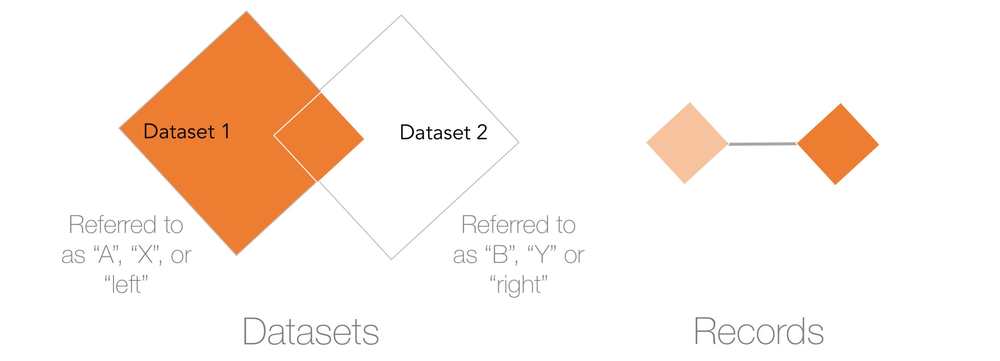
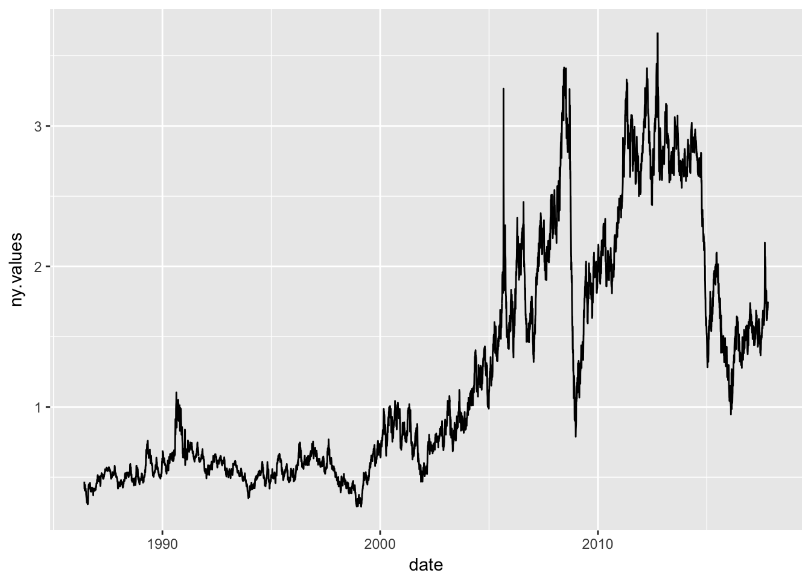
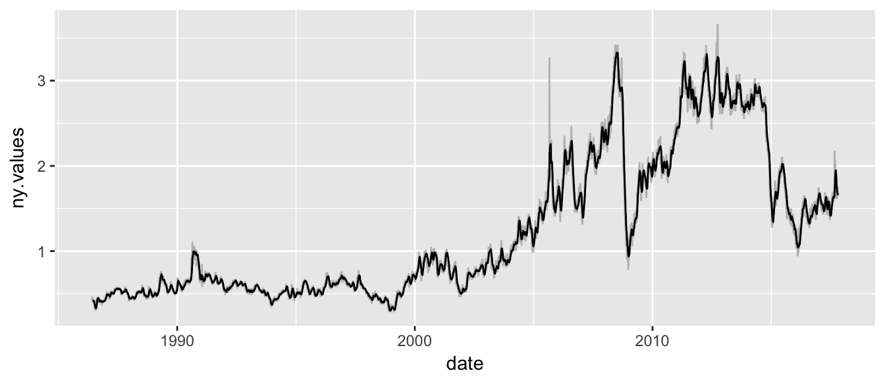
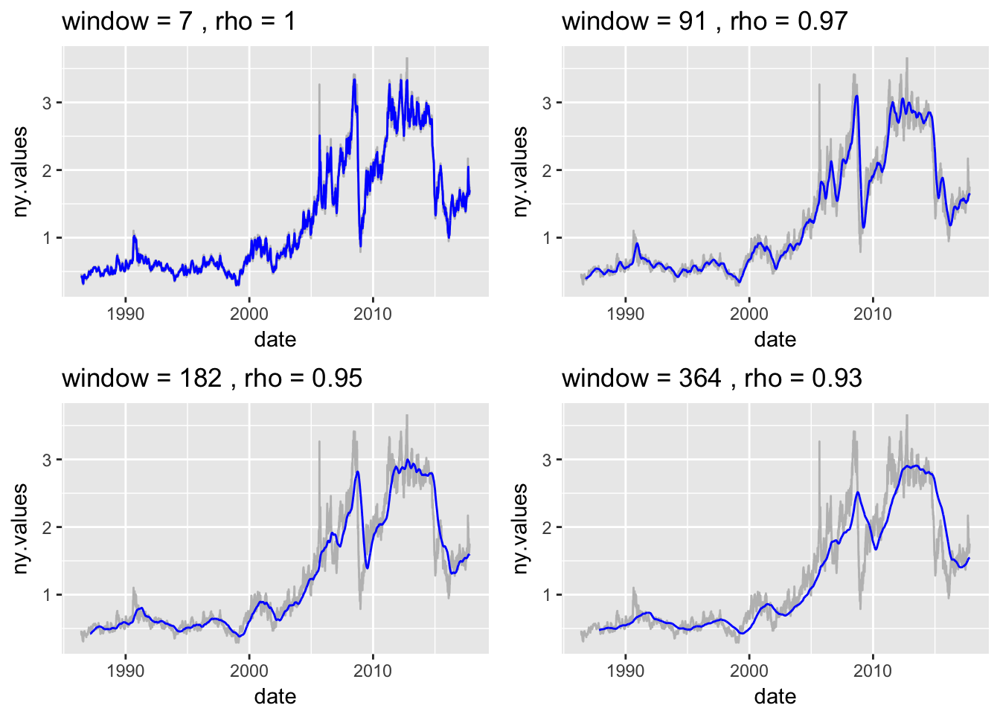
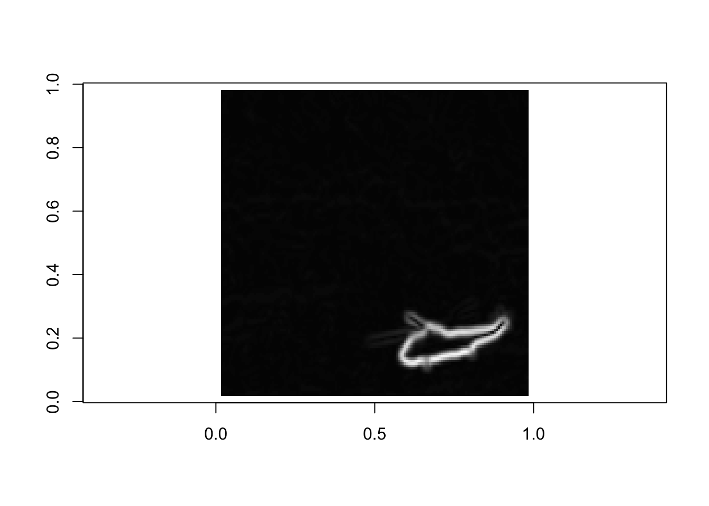

Chapter 3 Data Manipulation / Wrangling / Processing
3.1 Motivation
Speech contains a wealth of information. As humans, we are taught to understand verbal and written communication – pick out the nouns, verbs, and adjectives, then combine the information to decipher meaing. Take the following excerpt from the 2010 State of the Union:
Now, one place to start is serious financial reform. Look, I am not interested in punishing banks. I’m interested in protecting our economy. A strong, healthy financial market makes it possible for businesses to access credit and create new jobs. It channels the savings of families into investments that raise incomes. But that can only happen if we guard against the same recklessness that nearly brought down our entire economy. We need to make sure consumers and middle-class families have the information they need to make financial decisions. We can’t allow financial institutions, including those that take your deposits, to take risks that threaten the whole economy.
To many, text might not be considered data despite the fact that any analytical mind with a command of the English language can identify key terms:
Now, one place to start is seriousfinancial reform.Look, I am not interested inpunishing banks.I’m interested inprotecting our economy.Astrong, healthy financial marketmakes it possible forbusinessesto accesscreditandcreate new jobs.It channels thesavings of familiesintoinvestmentsthatraise incomes.But that can only happen if we guard against the samerecklessnessthat nearly brought down our entireeconomy.We need to make sureconsumersandmiddle-class familieshave the information they need to makefinancial decisions.We can’t allowfinancial institutions,including those that take yourdeposits,to take risks that threaten the wholeeconomy.
Much like the logic that guides keyword identification, text can be shaped from an unstructured dataset into a well-defined, structured dataset:
| Terms | Frequency of Term | Number of Characters |
|---|---|---|
| financial | 4 | 9 |
| economy | 3 | 7 |
| families | 2 | 8 |
| interested | 2 | 10 |
Of course, this process could be done manually, but imagine sorting through all 7,304 words in the 2010 address or scaling the process to the roughly 1.9 million words in addresses State of the Union addresses between 1790 and 2016. All the steps required to convert unstructured text into usable data can be done with a little bit of planning, technical imagination and data manipulation. Every little detail about the data needs to be considered and meticulously converted into a usable form. From a data format perspective, capitalized characters are not the same as lower case. Contractions are not the same as terms that are spelled out. Punctuation affect spacing. Carriage returns and new line markers, while not visible in reading mode, are recorded.
Let’s take one line from above and dissect the changes that need to be made:
“We need to make sure consumers and middle-class families have the information they need to make financial decisions. We can’t allow financial institutions, including those that take your deposits, to take risks that threaten the whole economy.”
We then turn everything into lower case so all letters of the alphabet are read the same.
“we need to make sure consumers and middle-class families have the information they need to make financial decisions. we can’t allow financial institutions, including those that take your deposits, to take risks that threaten the whole economy.”
Then, we get rid of punctuation by substituting values with empty quotations ("").
“we need to make sure consumers and middleclass families have the information they need to make financial decisions we cant allow financial institutions including those that take your deposits to take risks that threaten the whole economy”
Each space between each word can be used as a delimiter that can be used as a symbol for a program to break apart words into elements in a list.
| we | families | financial | those | that |
| need | have | decisions | that | threaten |
| to | the | we | take | the |
| make | information | cant | your | whole |
| sure | they | allow | deposits | economy |
| consumers | need | financial | to | |
| and | to | institutions | take | |
| middleclass | make | including | risks |
There are words in there that don’t add much value as they are commonplace and filler. In text processing, these words are known as stop words. In each domain, the list of stop words likely differs, thus data scientists may need to build a customized list. For simplicity, we’ve used a stop words list that is used in the mySQL – an open source relational database management system. The result is the list of remaining words.
| make | information | financial | risks |
| consumers | make | institutions | threaten |
| middleclass | financial | including | economy |
| families | decisions | deposits |
From that data, we can aggregate the data into a form that is meaningful to answer a research question. For example, the frequency of words may provide a clue as to what the text is about. In this case, each “financial” and “make” appear twice in the text, perhaps indicating that there is an orientation towards action (make) for financial considerations.
| Term | Freq | Term | Freq |
|---|---|---|---|
| financial | 2 | including | 1 |
| make | 2 | information | 1 |
| consumers | 1 | institutions | 1 |
| decisions | 1 | middleclass | 1 |
| deposits | 1 | risks | 1 |
| economy | 1 | threaten | 1 |
| families | 1 |
This is just the tip of the iceberg. Text processing is just one example of feature engineering – or the creation and derivation of new information from data that is not in the best of formats. There is often information hidden within information and mastering feature engineering and data manipulation more generally unlocks new possibilities and insights.
Much of a data scientist’s time is spent extracting, cleaning, and transforming data for use. In database circles, this process is sometimes referred to as Extract-Transform-Load. In general data circles, it is referred to as data wrangling or data munging. Regardless of the term, without a reputable study to cite, the author supposes based on his and colleagues’ experiences that as much of 80% of a data project is spent manipulating information. Thus, it is evermore important to master the basic skills. Stronger one’s command of programming data manipulations, the faster one can code, the soon one can get to the more interest aspects of using data as a strategy.
This chapter is dedicated to building the fundamental skills on which all data projects rely. We begin by highlighting introducing the mechanics of cell level (e.g. text operations, formats) and structural level (e.g. sorting, subsetting, merging) data manipulation. We then proceed to introducing programming paradigms, namely control structures and functions, that vastly improve the efficiency when handling data. The chapter ends on a number of DIY cases.
3.2 Cell-Level Operations
Cell-level operations is a matter of changing the contents of data elements. With numeric data, this may involve various arithmetic operations like subtraction and multiplication, but that is applicable assuming that data is already of good quality. More often than not, data cleansing involves finding, extracting, and replacing the contents of string values. For example, below is a vector of four string values:
budget <- c("Captain's Log, Stardate 1511.8. I have $10.20 for a big galactic mac.",
"The ensign has $1,20 in her pocket.",
"The ExO spent has $0.25 left after paying for overpriced warp core fuel.",
"Chief medical officer is the high roller with $53,13.")What if we need to extract the total available funds available to buy galactic big macs? All four elements contain dollar values, which can benefit from feature engineering. To do so, we use a combination of text manipulation functions and regular expressions or regex – a series of characters that describe a regularly occurring text pattern.
First, commas should be replaced with a period using gsub(), assigning the result to a new object new. Note that in some regions, such as Europe, commas are used as decimals rather than periods.
new <- gsub(",", "\\.", budget)Second, find the elements that contain the following pattern: a dollar sign followed by one to two digits, followed by a period, then another two digits (\\$\\d{1,2}\\.\\d{2}). The pattern can be used with the functions regexpr() to find the positions of the matching patterns in the text, then regmatches() is used to extract.
indices <- regexpr("\\$\\d{1,2}\\.\\d{2}", new)
numbers <- regmatches(new, indices)
print(numbers)## [1] "$10.20" "$1.20" "$0.25" "$53.13"Third, we should replace dollar sign with blank and strip out any leading white space using trimws().
numbers <- trimws(gsub("\\$","", numbers))
print(numbers)## [1] "10.20" "1.20" "0.25" "53.13"Lastly, convert the character vector to numeric, then sum the vector.
money <- as.numeric(numbers)
print(paste0("Total galactic big mac funds = $", sum(money)))## [1] "Total galactic big mac funds = $64.78"A number of observations. In steps one through three, you will have noticed that the characters "$", ".", and "d" were preceded by double backslash. These are known as escaped characters as the double backslash preceding the characters changes their meanings. In step two, a sequence of unusual characters (\\$\\d{1,2}\\.\\d{2}) was used to find the $x.xx pattern, which can be broken into specific commands:
\\$is a dollar sign.\\d{1,2}is a series of numerical characters that is between one to two digits long.\\.is a period.\\d{2}is a series of numerical characters that is exactly two digits long.
Mastering regex is a productivity multiplier, opening the possibility of ultra-precise text replacement, extraction, and other manipulation. Imagine scenarios where raw data is not quality controlled and mass errors plague the usefulness of the data. An analyst may spend days if not weeks or months cleaning data by hand (or rather through find and replace). With regex, haphazard cleaning is no longer an issue. To make the most of regex requires a command of both text manipulation functions that are designed to interpret regex as well as regex itself.
3.2.1 Text manipulation functions
Find and replace are useful functions in most word processing and spreadsheet softwares. But what does it take to do find and replace at scale. The following seven text manipulation functions are commonly implemented in programming languages. Each searches for a user-defined pattern and returns a result in a well-defined format.
grep(): Returns either the index position of a matched string or the string containing the matched portion.grepl(): Returns a logical vector – a vector of TRUE/FALSE for whether a matched string was found.gsub(): Searches and replaces patterns in strings.regexpr(): Returns the character position of a pattern in a string.strsplit(): Splits strings into a list of values based on a delimiter.regmatches(): Extract substring using information fromregexpr()substr(): Extract substring from a string based on string positions.
Traditionally, functions like grep() are available through command line interfaces and are a core offering of the R programming language. On their own, some basic tasks can be accomplished such as exact matches of specific text. As will be seen later, these functions combined with regex are quite powerful. To illustrate the basic functionality, let’s assume we have four sentences that indicate when four US laws were signed.
laws <- c(". Dodd-Frank Act was signed into federal law on July 21, 2010.",
"Glass-Steagall Act was signed into federal law by FDR on June 16, 1933",
"Hatch Act went into effect on August 2, 1939",
"Sarbanes-Oxley Act was signed into law on July 30, 2002")Example Task: I need to find all sentences about laws that were sponsored by two congressmen.
Suppose we need to find acts that are named for two congressmen. The grep() function can be used to find the index positions of elements in a vector that contain "-". Otherwise stated, return the row number for each sentence that contains a hyphen. In this case, the 1st, 2nd, and 4th elements in the laws vector contain hyphens.
grep("-", laws)## [1] 1 2 4grep() can also return the matched value when the option value is set to TRUE. This is handy for inspecting the accuracy of matches. In practice, with large data sets that contain variable names that follow a common convention, column names can be efficiently searched.
grep("-", laws, value = TRUE)## [1] ". Dodd-Frank Act was signed into federal law on July 21, 2010."
## [2] "Glass-Steagall Act was signed into federal law by FDR on June 16, 1933"
## [3] "Sarbanes-Oxley Act was signed into law on July 30, 2002"This can also be expressed in a different way. The grepl() function can be used to obtain a vector of logical values (TRUE/FALSE) that is the same length as the input vector laws.
grepl("-", laws)## [1] TRUE TRUE FALSE TRUEExample Task: I need to find text about laws passed in the 21st century.
The same functions can be used to find laws that were passed int he 21st century. We can look for sentences that contain 20 followed by any two digits. This is a regex expression that will be elaborated upon in the following section.
grep("20\\d{2}", laws)## [1] 1 4Example Task: I need to find the names of co-sponsored laws.
Similar to grep(), regexpr() enables more precise search and extraction. Rather than returning which element contains a matched string pattern, regexpr() returns two sets of attributes. The first indicates the position of the first character that is matched in each string (e.g. 7 indicates that the - value is the fifth character is the first string) whereas the second set of attributes indicate the length of the match. Positive values indicate the number of characters and a value of -1 indicates no match.
regexpr("-", laws)## [1] 7 6 -1 9
## attr(,"match.length")
## [1] 1 1 -1 1
## attr(,"useBytes")
## [1] TRUEFor even greater precision, a regex search can be used to turn up positions of within an element that contains a match. In the example below, \\w is used to find any alphanumeric character. The numbers {3,20} indicate how many characters – in this case, we’re searching for substrings that are between three and 20 charaters long, separated by a hyphen. The result is two set of values. The first set of numbers indicates the position of the first string character that matches the pattern (e.g. 3 indicates that Dodd-Frank starts in the 3rd space in the string). The second number in the following row indicates the length of the match (e.g. 10 indicates that Dodd-Frank is 10 characters long). More of these regex oeprators are described later in this chapter.
regexpr("\\w{3,20}-\\w{3,20}", laws)## [1] 3 1 -1 1
## attr(,"match.length")
## [1] 10 14 -1 14
## attr(,"useBytes")
## [1] TRUEregexpr alone is not all that useful, but is incredibly powerful when combined with regmatches(), which extracts character values based on the output of regexpr(). Below, we place the results of a search for two alphabetic strings separated by a hyphen in the object result, then pass both the laws vector and the regexpr() result in regmatches(). We print to console the resulting vector.
result <- regexpr("\\w{3,20}-\\w{3,20}", laws)
matched <- regmatches(laws, result)
print(matched)## [1] "Dodd-Frank" "Glass-Steagall" "Sarbanes-Oxley"Example Task: I need to remove a pesky hyphen.
To remove the hyphen, we can use gsub() to find “-” and replace with a space " “.
cleaned <- gsub("-"," ", matched)
print(cleaned)## [1] "Dodd Frank" "Glass Steagall" "Sarbanes Oxley"Example Task: I need to make a catchy abbreviation for these law names.
Using substr(), substrings or parts of strings can be extracted based on their position. To get the first two letters of each law, we can do the following:
substr(laws,1,2)## [1] ". " "Gl" "Ha" "Sa"Or create new vectors that are a concatenation of the first two letters of each name like SoHo, NoHo, or any trendy name.
#Get index of second name (search for space followed by two characters)
indices <- regexpr(" \\w{2}",cleaned)
#extract first two letters
secondhalf <- trimws(regmatches(cleaned, indices))
paste0(substr(cleaned,1,2), secondhalf)## [1] "DoFr" "GlSt" "SaOx"Example Task: I need to extract the last names of each congressman who co-sponsored bills.
Lastly, strsplit() can be used to create a list of all names that have been used in laws, simply by using the - as a separator or delimiter.
print(matched)## [1] "Dodd-Frank" "Glass-Steagall" "Sarbanes-Oxley" lawnames <- strsplit(matched, "-")
print(lawnames)## [[1]]
## [1] "Dodd" "Frank"
##
## [[2]]
## [1] "Glass" "Steagall"
##
## [[3]]
## [1] "Sarbanes" "Oxley"Note that a list object is not the same as a vector. Lists can contain multiple instances of another class of object. The list returned from strsplit() contains multiple vectors. To access each item, simply refer to the element in the list using an index number. To access the Glass-Steagall objects, we can refer to the 2nd object in [[]].
lawnames[[2]]## [1] "Glass" "Steagall"3.2.2 Regular Expressions
Next up: Regex. These powerful commands give users the flexibility to search data and surface results with possible matches. Before proceeding into more complex string combinations, knowledge of a few cleverly designed capabilities may go a long way:
Alternatives (e.g. “OR” searches) can be surfaced by using a pipe “
|”. For example, a string search for “Bob or Moe” would be represented as “Bob|Moe”.The extent of a search should be denoted by parentheses
(). For example, a string search for “Jenny” or an alternative spelling like Jenny would be represented as “Jenn(y|i)”."A search for one specific character should be placed between square brackets
[].The number of characters is placed between curly brackets
{}.
In New York City, the famed avenue Broadway is may be written and abbreciated in a number of ways. The vector streets contains a few instances of spellings of Broadway mixed in with other streets that start with the letter B.
#A sampling of street names
streets <- c("Bruckner Blvd", "Bowery", "Broadway", "Bway", "Bdway",
"Broad Street", "Bridge Street", "B'way")
#Search for two specific options
grep("Broadway|Bdway", streets, value = TRUE)## [1] "Broadway" "Bdway"#Search for two variations of Broadway
grep("B(road|')way", streets, value = TRUE)## [1] "Broadway" "B'way"#Search for cases where either d or apostrophe are between B and way
grep("B[d']way", streets, value = TRUE)## [1] "Bdway" "B'way"3.2.2.1 Escaped characters
Quite a few single characters hold a special meaning in addition to the literal meaning. To disambiguate their meaning, a backslash precedes these characters to denote the alternative meaning. A few include:
\n: new line\r: carriage return\t: tab\': single quote when in a string enclosed in single quotes ('Nay, I can\'t')\": double quote when in a string enclosed in double quotes ("I have a \"guy\".")
In other cases, double backslashes should be used:
\\.: period. Otherwise, un-escaped periods indicate searches for any single character.\\$: dollar sign. A dollar sign without backslashes indicates to find patterns at the end of a string.
3.2.2.2 Character Classes
A character class or character set is used to identify specific characters within a string. How would one represent “12.301.1034” or “?!?!?!”? One or more of the following character classes can do the job:
[:punct:]: Any and all punctuation such as periods, commas, semicolons, etc. For specific specific punctuation, simply enclose the characters between two brackets. For example, to find only commas and carrots, use[<>,].[:alpha:]: Alphabetic characters such as a, b, c, etc. With other languages including R, it is commonly written as[a-z]for lower case and[A-Z]for upper case.[:digit:]: Numerical values. With other languages including R, it is commonly written as\\dor[0-9]. For any non-digit, write\\D.[:alnum:]: Alphanumeric characters (mix of letters and numbers). With other languages including R, it is indicated using to as[0-9A-Za-z]or\\w. For any non-alphanumeric character, use\\W.[:space:]: Spaces such as tabs, carriage returns, etc. For any white space, use\\s. For any non-whitespace character, use\\S.[:graph:]: Human readable characters including[:alnum:]and[:punct:].\\b: Used to denote “whole words”.\\bshould be placed before and after a regex pattern. For example,\\b\\w{10}\\bindicates a 10 letter word.
There are quite a few character classes not listed above, but for these constitute the lion’s share. It is worth keeping in mind that the implementation of character classes may differ between programming languages. A number of the above are extensions that have been implemented in R in a specific manner.
3.2.2.3 Quantifiers
Each character class on its own indicates a search for one and only one character. In practice, most character searches will involve a search for more than just one character. To indicate such a search, regex relies on quantifiers to indicate the length of patterns. For example, a search for a year between the year 1980 and 2000 will require exactly four digits, but a search for the speed of a gust of wind will likely vary between 1 and 3 digits. The following six quantifiers provide a degree of both flexibility and specificity to accomplish search tasks:
{n}: match pattern n times for a preceding character class. For example"\\d{4}"looks for a four digit number.{n, m}: match pattern at least n-times and not more than m times for a preceding character class. For example"\\d{1,4}"looks for one to four digit number.{n, }: match at least n times for a preceding character class. For example"\\d{4,}"looks for a number that has at least four digits.*: Wildcard, or match at least 0 times.+: Match at least once.?: Match at most once.
In the example below, quantifiers are used to extract specific number patterns with a high degree of accuracy.
dates <- c("Octavian became Augustus on 16 Jan 27 BCE",
"In the year 2000, a computer bug was expected to topple society.",
"In the 5400000000 years, our sun will become a red dwarf.")
#Match an element with a 9 digit number
grep("\\d{9}", dates, value = TRUE)## [1] "In the 5400000000 years, our sun will become a red dwarf."#Match an element with a 9 digit number
grep("\\b\\d{4}\\b", dates, value = TRUE)## [1] "In the year 2000, a computer bug was expected to topple society."#Match a date that follows 16 January 27 BCE
grep("\\d{2}\\s\\w{3}\\s\\d{2}\\s\\w{3}", dates, value = TRUE)## [1] "Octavian became Augustus on 16 Jan 27 BCE"3.2.2.4 Position matching
Regex builds in functionality to search for patterns based on position of a substring in a string, such as at the start or end of a string. There are quite a few other position matching patterns, but the following two are the workhorses.
$: Search at the end of a string.^: Start of string when placed at the beginning of a regex pattern.
To demonstrate these patterns, we’ll apply grep() to three headlines from the BBC.
headlines <- c("May to deliver speech on Brexit",
"Pound falls with May's comments",
"May: Brexit plans to be laid out in new year")
print(headlines)## [1] "May to deliver speech on Brexit"
## [2] "Pound falls with May's comments"
## [3] "May: Brexit plans to be laid out in new year"#Find elements that contain May at the beginning of the string
grep("^May", headlines, value = TRUE)## [1] "May to deliver speech on Brexit"
## [2] "May: Brexit plans to be laid out in new year"#Find elements that contain Brexit at the beginning of the string
grep("Brexit$", headlines, value = TRUE)## [1] "May to deliver speech on Brexit"3.2.2.5 Exercises
Personally identifiable information or PII is often a barrier to sharing information For the following financial record, anonymize records by removing age and name using gsub() and regmatches() to extract the amount of money John owes the bank.
statement <- "John (SSN: 012-34-5678) owes $1004 to the bank at 49-29 Pewter Street."3.3 Matrix and Data Frames
Moving onto the macro-scale, individual values of data are often placed within vectors, matrices and data frames. We already know that vectors are a series of values of the same data type (e.g. strings, numerics, booleans) and matrices are vectors but in two dimensions (\(n \times m\) dimensions). Data frames are a generalization of matrices that allow for each column of data to hold different data types as well as refer to individual columns by a user-specified name.
When should each matrices and data frames be used? From a pure logistical perspective, data frames are more flexible with respect to its ability to store multiple data types. Some code libraries are built specifically for matrices and others for data frames. Ultimately, it is up to the data scientist to choose.
| Matrices | Data Frames | |
|---|---|---|
| Pros | Memory efficient. Good for advanced mathematical operations. | Store mixed types of data types. Allows user to refer to columns by an explicit name. |
| Cons | Able to store one data type at a time – leads to slightly more work required to manage multiple matrices. Columns can only be referred to by index number. | Not as memory efficient. |
In this section, we review among the most powerful functions for data manipulation: sort, reshape, collapse, and merge. A mastery of the logic and operations that guide matrix and data frame processing opens the possibilities to work with virtually any kind of data. To illustrate this, consider a data frame with a list of the top 25 male long jumpers and top 25 female long jumpers as found on Wikipedia. Each row contains information about one athlete such as with their record-setting longest jump, date of jump, location of jump among other features. Imagine the sort of tasks that one could do to munged the data into a usable shape.
Note that data can be obtained directly from this URL (https://s3.amazonaws.com/dspp/long_jump_top25.csv):
jumps <- read.csv("https://s3.amazonaws.com/dspp/long_jump_top25.csv")
print(jumps)or alternatively using the digIt() function designed for this textbook.
library(digIt)
jumps <- digIt("long_jump_top25")
print(jumps)| sex | rank | athlete | mark.meters | date | place |
|---|---|---|---|---|---|
| male | 1 | Mike Powell | 8.95 | 30 August 1991 | Tokyo |
| male | 2 | Bob Beamon | 8.9 | 18 October 1968 | Mexico City |
| . | . | . | . | . | . |
| . | . | . | . | . | . |
| female | 14 | Ivana Španović | 7.24 | 5 March 2017 | Belgrade |
| female | 16 | Helga Radtke | 7.21 | 26 July 1984 | Dresden |
3.3.1 Indices and Subsetting
In both matrices and data frames, individual and ranges of rows and columns can be extracted by calling their index number. The jumps data contains \(n = 51\) rows and \(k = 6\) features for a total of \(306\) data elements. Each row and each feature has a unique index number that starts from \(1\) and increases sequentially. In other programming languages, index numbers start from \(0\).
To extract the second row from jumps, we simply type the number 2 before the commaa in square brackets. The line below essentially indicates that given a matrix or data frame, extract the second row and all columns.
jumps[2,]## sex rank athlete mark.meters date place
## 2 male 2 Bob Beamon 8.9 18 October 1968 Mexico CityTo extract multiple records by row index depends on whether the request is sequential or piecemeal. Below, the first line extracts a range of rows from the 2nd through 4th rows in jumps, whereas the second extracts two non-overlapping ranges that are included in a vector.
jumps[2:4, ] # apply the index range to extract rows
jumps[c(1:2,10:11), ] # specific indicesThe same notation can be used to extract all athlete names for all records by typing the number 3 after the comma in square brackets. The number 3 is the column index that contains athlete names. Keep in mind that extracting one column from a matrix or data frame results in a vector – the data structure is not retained.
jumps[, 3] In addition, data frames provide a few additional methods of extracting the athlete column.
jumps[, "athlete"] # extract column with "athlete" label
jumps[["athlete"]] # list syntax to extract column from data frame
jumps$athlete #compact version of data column manipulationTo extract two or more columns follows a familiar pattern, making use of either a range of column indices or a vector of column names.
jumps[, 3:4] # extract multiple columns
jumps[, c("athlete", "mark.meters")] # multiple column labelsTo extract rows that meet one specific criterion requires the creation of either a vector of booleans than indicate if the criterion is TRUE or FALSE for each row (logical vector has the same number of rows as the data), or a list of row index numbers that meet the criterion. The example below performs operations on a data frame.
Example 1: Create a vector of booleans over 8.8 meters, then select rows based on whether a row contains a TRUE value.
group1 <- jumps$mark.meters > 8.8 # return vector of booleans for jumps over 8.8 meters
jumps[group1, ] # select the indicesExample 2: Find row indices that contain the place “Eugene”, then use the vector of matching row indices to extract rows from jumps.
group2 <- grep("Eugene", jumps$place)
jumps[group2, ] Example 3: Find record setting jumps in Tokyo, Mexico City and New York City using the %in% operator.
#Find place in vector of cities
group3 <- jumps$place %in% c("New York City", "Mexico City", "Tokyo")
#Return matching entries
jumps[group3, ]
#Return non-matching entries
jumps[!group3, ]Extract rows that meet two criteria is as simple as using logical operators. To search for two non-overlapping criteria, the pipe operator "|" should be used to represent OR, whereas "&" represents AND.
#Find athletes who jumped beyond 8.9m or below 7.2m
group2 <- (jumps$mark.meters > 8.8) | (jumps$mark.meters < 7.2)
jumps[group2, ] # select the indicesRows and columns can be re-ordered simply by enumerating indices in a specified order. For example, columns can be re-ordered by passing a vector of column indices into a data frame.
#Original order
colnames(jumps)## [1] "sex" "rank" "athlete" "mark.meters" "date"
## [6] "place"#Reorder according vector of column indices
jumps <- jumps[, c(2, 4, 3, 6, 1, 5)]
#Check new order
colnames(jumps)## [1] "rank" "mark.meters" "athlete" "place" "sex"
## [6] "date"To sort a column can be done using order(), which returns a vector of row indicies in ascending order.
order(jumps$mark.meters)## [1] 49 50 51 47 48 43 44 45 46 41 42 39 40 38 37 34 35 36 33 32 31 30 29
## [24] 28 27 26 24 25 22 23 21 19 20 17 18 16 15 14 13 12 11 9 10 8 5 6
## [47] 7 4 3 2 1This simple function can be included in the rows index to sort a entire data frame. To sort descending, add a "-" before the feature to be sorted.
jumps[order(jumps$mark.meters), ] # order records by mark.meters
jumps[order(-jumps$mark.meters), ] # order records by mark.meters, decreasing
jumps[order(jumps$mark.meters, decreasing=TRUE), ]# order records by mark.meters, decreasingTo sort on multiple columns is a matter of adding additional fields separated by commas.
# first by rank, then sex, then place
jumps[order(jumps$rank, jumps$sex, jumps$place), ]
# first desc. by rank, then sex, then place
jumps[order(-jumps$rank, jumps$sex, jumps$place), ]Exercises
- Extract records with female athletes who are ranked greater than rank #10.
- Extract records with jump marks greater than 7.250 meters and less than 8.625 meters.
3.3.2 Reshape
Data usually takes on two basic shapes: wide and long. The data frame in the previous section is in long format in which each row represents an individual that is ranked among the top 25 within each sex. Each row has a value (mark.meters) associated with the characteristics that make that row unique (athlete, place, rank, sex, date).
We will find that the wide form is also useful. For those who have familiarity with spreadsheet software, reshaping data essentially is the functionality behind a pivot table. Some features can be used to identify rows and others features can be used to stratify the data by discrete bins. The reshape() function can be used to convert a data frame such that each row contains values for each rank (1 to 25) placing the distance jumped by each sex in separate columns.
reshape(<data>,
idvar = <ID variables>,
timevar = <column variables>,
direction = <direction>)<data>is the data set<ID variables>is a variable or a combination of variables that serves as a unique identifier for each row<column variables>is a variable that will be used to define multiple measurements per row<direction>indicates if the data will be converted into long or wide form.
To illustrate reshape(), the data is whittled down to a three feature set containing rank, sex and mark.meters. These features are then input into the reshape() to convert a long form data set into wide form.
example <- jumps[, c("rank", "sex", "mark.meters")]
wide <- reshape(example,
idvar = "rank", timevar = "sex", direction = "wide")
head(wide, 5)## rank mark.meters.male mark.meters.female
## 1 1 8.95 7.52
## 2 2 8.90 7.49
## 3 3 8.87 7.48
## 4 4 8.86 7.43
## 5 5 8.74 7.42There are now 21 rows, where there were previously 51. Returning to the original long format is straightforward; but we aren’t left with the exact same data table. There are artifacts of the change-in-shape for both the column and row names. Sort of like data manipulation breadcrumbs. This will be cleaned up in the next subsection.
Rename row and column headers
The newly assigned column or row names may not match the meaning in the data. It is good practice to maintain the column headers at each stage of analysis, even if you don’t immediately use the intermediate data table. Otherwise editing code gets confusing, quickly. The column names are stored in an attribute of the data frame:
#Two ways of obtaining data frame field names
names(wide)## [1] "rank" "mark.meters.male" "mark.meters.female" colnames(wide)## [1] "rank" "mark.meters.male" "mark.meters.female"Renaming column headers using the built-in, base functions in R looks confusing. In words, the following code identifies the positions in names(wide) where the values are mark.meters.male and mark.meters.female. At the specified positions, the values is reassigned with new values male.mark and female.mark, respectively.
names(wide)[names(wide) == "mark.meters.male"] <- "male.mark"
names(wide)[names(wide) == "mark.meters.female"] <- "female.mark"
head(wide, 5)## rank male.mark female.mark
## 1 1 8.95 7.52
## 2 2 8.90 7.49
## 3 3 8.87 7.48
## 4 4 8.86 7.43
## 5 5 8.74 7.42Alternatively, groups of fields can be renamed based on the index position in the names list.
colnames(wide)[c(1,3)] <- c("rank.num", "female.mark")3.3.3 Collapse
Reshape and collapse are often used in conjunction in order to calculate summary statistics by group. The aggregate() function is the workhorse for summarizing data. It accepts three arguments:
aggregate(<x>, by = list(<groups>), FUN = <function>))<function>is the specific function that will be applied to the data. Commonly used functions includedmean,sum,length(count),sd(standard deviation), among others.<x>is the R object on which the function will be applied. This generally should be a numerical value.<groups>is a variable that contains groups for which the mathematical function will be calculated. This needs to be provided as alist().
Consider this function to estimate the jump distance average by sex. To arrive at the answer, we will collapse the data frame by sex to create a new data frame with the average jump distance by sex. Notice that the group variable can be named within the list and the number of observations is reduced to only two.
(out <- aggregate(jumps$mark.meters, by = list(athlete.sex = jumps$sex), FUN = mean))## athlete.sex x
## 1 female 7.2850
## 2 male 8.6588How about tabulations? count medals by country
Note that data can be obtained directly from this URL (https://s3.amazonaws.com/whoa-data/long_jump_olympics.csv):
jumps <- read.csv("https://s3.amazonaws.com/whoa-data/long_jump_olympics.csv")
print(jumps)or alternatively using the digIt() function designed for this textbook.
olympics <- digIt("long_jump_olympics")
head(olympics,3)The USA had won 56 olympic long jump medals through 2017.
cty_medals <- aggregate(olympics$country, by = list(country = olympics$country), FUN = length)
head(cty_medals[order(-cty_medals$x),], 3)## country x
## 33 USA 56
## 32 URS 12
## 12 GBR 8The built-in R functions are effective, but new, memory efficient libraries have arisen to augment R’s capabilites.
Exercises
- Load the
irisdataset using thedatasetspackage. Calculate the average and maximum sepal length for each Iris species. (Bonus: Write the commands without error messages.) - Use the
aggregate()function to count the number of observations of sepal width for each species. - (Difficult) Create a data frame with the 35th observation of sepal width for each species.
3.3.4 Join
Joining is one of the most critical steps in a data analytics project as it allows one data set to be augmented by another.

Types of joins
merge(x, y, by = ids, all.x = TRUE, all.y = TRUE))xis the left-hand side data frame;yis the right-hand side data frame;by = idsis a string vector of variable names to be joined. Note that this is used when the variable names are identical in bothxandy. If column names are different, useby.xto specifyxcolumn names andby.yforycolumn names.all.xandall.yare logical parameters (TRUE/FALSE) that control the type of join:- Inner join: By default, both parameters are set to
FALSE. - Left outer join: set
all.x = TRUE. - Right outer join: set
all.y = TRUE. - Outer join: set
all.x = TRUEandall.y = TRUE.
To illustrate the power of joins, we apply basic data manipulation to answer a few exploratory questions.
Which of the top 25 athletes hold an Olympic medal? This can be done by a left join.
#Aggregate number of medals by athlete
medals <- aggregate(olympics$country,
by = list(athlete = olympics$athlete),
FUN = length)
#Join jumps with medals
inner_join <- merge(x = jumps[, c("athlete","mark.meters")],
y = medals,
by = "athlete")
#See top 10
head(inner_join[!is.na(inner_join$x), ], 10)## athlete mark.meters x
## 1 Bob Beamon 8.90 1
## 2 Brittney Reese 7.31 1
## 3 Carl Lewis 8.87 4
## 4 Dwight Phillips 8.74 1
## 5 Galina Chistyakova 7.52 1
## 6 Greg Rutherford 8.51 2
## 7 Heike Drechsler 7.48 3
## 8 Inessa Kravets 7.37 1
## 9 Irina Meleshina 7.27 1
## 10 Irving Saladino 8.73 1How many of the 51 top long jumpers did not earn an Olympic medal? Left outer join by specifying all.x = TRUE to keep all left side values.
#Merge
left_outer <- merge(x = jumps[, c("athlete","mark.meters")],
y = medals,
by = "athlete",
all.x = TRUE)
#Print the number of rows
nrow(left_outer[is.na(left_outer$x), ])## [1] 27How many Olympic medalists are not on the top 25 list? Right outer join by specifying all.y = TRUE to keep all right side values.
#Merge
right_outer <- merge(x = jumps[, c("athlete","mark.meters")],
y = medals,
by = "athlete",
all.y = TRUE)
#Print the number of rows
nrow(right_outer[is.na(right_outer$mark.meters), ])## [1] 93Exercises
- The
datasetslibrary is a base package in R that contains a number of data sets for learning and practice. Use thestatedatasets (take a look at the documentation) to calculate identify the state division (e.g. New England) that the state with the highest murder rate. - What was the recorded population by region?
Answers.
- Aggregate, then sort.
#Set data as a data frame
df <- as.data.frame(state.x77)
#Roll up by division, calculating max
out <- aggregate(df$Murder,
by = list(state.division),
FUN = max)
#Re-order
out <- out[order(-out[,2]), ]
out[1, ]## Group.1 x
## 4 East South Central 15.1- Aggregate.
#Set data as a data frame
df <- as.data.frame(state.x77)
#Roll up by division, calculating max
out <- aggregate(df$Population,
by = list(state.region),
FUN = sum)
out## Group.1 x
## 1 Northeast 49456
## 2 South 67330
## 3 North Central 57636
## 4 West 378993.4 Control Structures
Much of data science requires developing specialized code to handle the eccentricities of a dataset. Re-running blocks of code is required, often times on multiple data samples and subpopulations. It’s simply not scalable to manually change variables and assumptions of the code everytime.
Variables are typically treated differently based on their quality and characteristics. In order to accomplish analytical and programming tasks, control structures are used to determine how a program will treat a given variable given conditions and parameters. In this section, we will cover two commonly used control structures: if…else statements and for loops.
3.4.1 If and If…Else Statement
If statements evaluate a logical statement, then execute a script based on whether the evaluated statement is true or false. If the statement is TRUE, then the code block is executed.
budget <- 450
if(budget > 400){
#If statement true, run script goes here
print("You're over budget. Cut back.")
}## [1] "You're over budget. Cut back."In cases where there are two or more choices, if…else statements would be appropriate. In addition to the if() statement, an else statement is included to handle cases where the logical statement is FALSE.
budget <- 399
if(budget >= 400){
#If statement true, run script goes here
print("You're over budget. Cut back.")
} else {
#else, run script goes here
print("You're under budget, but watch it.")
}The complexity of these statements can be as simple as if(x > 10){ print("Hello")} more complex trees:
age <- 23
if(age <= 12){
print("kid")
} else if(age >12 && age <20) {
print("teenager")
} else if(age >=20 && age <65) {
print("adult")
} else{
print("senior")
}## [1] "adult"3.4.2 For-loops
Loops can be used to run the a given statement of code multiple times for a specified number of times or a list of index value. This is a functionality that is available in most programming languages, but the programming syntax will be different. Conceptually, for loops can be likened to an assembly line in a car factory. In order to build a car, a series of well-defined, well-timed processes need to coordinated in a serial fashion. To build 500 cars, the process needs to be executed 500 times. For-loops are essentially the same: Given a well-defined, self-contained process, a process can be be iterativelyapplied to address repetive tasks.
Let’s take the following example. The code block essentially says “print values for the range of 1 through 5”, where i is an index value. When executing the statement, R will push the first value in the sequence of 1:5 into the index (in this case, it’s the number 1), then the code block in between the {} (curly brackets) will be executed, treating i as if it’s the number 1. Upon executing the code without error, R will advance to the next value in the sequence and repeat the process until all values in the sequence have been completed.
for(i in 1:5){
print(paste0("Car #", i))
}## [1] "Car #1"
## [1] "Car #2"
## [1] "Car #3"
## [1] "Car #4"
## [1] "Car #5"We can do the same for a vector or list of values. In the example below, the vector news contains six terms. Using a for-loop, we can print out each word in the vector.
news <- c("The","Dow","Is","Up","By","400pts")
for(i in news){
print(i)
}## [1] "The"
## [1] "Dow"
## [1] "Is"
## [1] "Up"
## [1] "By"
## [1] "400pts"For-loops has a few qualities that users should be aware. First, what happens within the for-loop is written to the R environment as global variables. That means that any object (e.g. calculations, models) that is created in the loop will be accessible in the programming enviromment even after the loop ends. This may be a good or bad, depending on the use case: Good if one wants to keep copies of the intermediate results of a loop iteration, but bad if the user is not careful to take note of the potential floor of extraneous objects that may effect downstream calculations. Second, one of the most common mistakes when using loops is failing to record the result of the loop. There are functions in R that are designed to log and package results from loops, but in plain vanilla loops, this is not the case.
A common paradigm with for-loops is to iteratively execute repetitive tasks. For example, if a calculation needed to be applied to each of one million files and the results need to be logged, then for-loops are a good option. Typically, the paradigm proceeds as follows:
- Create placeholder object (e.g. a vector, matrix, or data frame);
- Initialize loop; and
- Add outputs to placeholder at the end of each loop iteration.
This may be applied in a broad variety of cases such as processes each data set in a repository of many large data sets, calculating complex statistics for various strata and subsets within the data, among others. Best practices with loops start with initializing new placeholder objects to full length before the loop rather than increasing the object size within the loop25. In R, this is particularly important issue for efficient data processing.
In the example below, we would like to calculate the minimum and maximum of each of 1000 randomly generated normal distributions with \(\mu = 1000\) and \(\sigma = 10\). To do this, a placeholder data frame x with three columns (iteration, min and max) is created with \(n = 1000\) rows for each of the random distributions to be generated. Then, we use Sys.time() to capture when the loop starts and end – a common practice for optimizing code. The loop is initiated for 1 to 1000 iterations to calculate the mininum and maximum. At the end of each iteration, the min and max results are overwritten to the row that corresponds to the iteration in the placeholder x.
#Set placeholder data frame with n rows
n <- 1000
x <- data.frame(iteration = 1:n,
min = numeric(n),
max = numeric(n))
#Loop
start <- Sys.time()
for(i in 1:n){
y <- rnorm(10000, 1000, 10)
x$min[i] <- min(y)
x$max[i] <- max(y)
}
Sys.time() - start## Time difference of 0.95297 secsThe above process required roughly 0.8 seconds to process. What happens if the placeholder length were not pre-specified? For the given parameters, the task normally may last between 1.2 and 1.5 seconds. This may not seem to be much time, but at scale with millions if not billions of records and iterations, the time does tend to add up.
#Set placeholder data frame without dimensions
n <- 1000
x <- data.frame()
#Loop
start <- Sys.time()
for(i in 1:n){
set.seed(i)
y <- rnorm(10000, 1000, 10)
x <- rbind(x, cbind(iteration = i,
min = min(y),
max = max(y)))
}
Sys.time() - start## Time difference of 1.356999 secs3.4.2.1 R-specific: apply
For-loops are common across all languages, but the efficiency of their implementation will vary. As was described in the previous chapter, R is an interpretted language optimized for mathematical and statistical calculation – quite different than other languages. This means that programming in R is most optimal when vectorizing calculation – linear algebra calculations of vectors and matrices using operations such as +, -, *, %*%, among others.
In R, the speed of for-loops may be improved using lapply() under certain circumstances. lapply(), or list apply Whereas the intermediate objects in for-loops are global variables, lapply() creates temporary local variables.
#Set n
n <- 1000
#Loop
start <- Sys.time()
x <- lapply(1:n, function(i){
y <- rnorm(10000, 1000, 10)
return(cbind(iteration = i,
min = min(y),
max = max(y)))
})
x <- do.call(rbind, x)
Sys.time() - start## Time difference of 0.808532 secs3.4.3 While
Whereas for loops require a range or list of values through which to iterate, while() statements keep iterating until some condition is met. The while() statement is formulated as follows:
while([condition is true]){
[execute this statement]
}A simple case may involve drawing a random value \(x\) from a normal distribution (\(\mu = 1.0\), \(\sigma = 0.5\)) while \(x\) is greater than 0.01.
x <- 1
while(x > 0.01){
x <- rnorm(1, 1, 0.5)
print(x)
}## [1] 0.6867731
## [1] 1.091822
## [1] 0.5821857
## [1] 1.79764
## [1] 1.164754
## [1] 0.5897658
## [1] 1.243715
## [1] 1.369162
## [1] 1.287891
## [1] 0.8473058
## [1] 1.755891
## [1] 1.194922
## [1] 0.6893797
## [1] -0.1073499 print("done!")## [1] "done!"Exercises
- Write an if-else statement that classifies a number as positive number as “up” and a negative number as “down”. Then, write a forloop to classify each record of
xfromx_2tox_100is up or down relative to the preceding record Then, usetable()to tabular the number of up days versus down days.
n <- 500
series <- sin((1:n)/100) + cos((1:n)/80)- Fibonacci numbers are defined as \(F_n = F_{n-1} + F_{n-2}\), or numbers that are defined as the sum of the preceding two numbers. For example, given an initial sequence of
0, 1, the next five numbers are1, 2, 3, 5, 8. Using awhile()loop, find the Fibonacci number that precedes 1,000,000. - Often times, data files are stored in smaller chunks to save space and enhance searchability. In some cases, data is stored in daily chunks. The National Oceanic and Atmospheric Administration (NOAA) releases data every day on environmental and atmospheric conditions, including storms. Download the data using
digIt("hail_201601", download = TRUE)and unzip the files, then uselist.files(), then write a loop to record the following measures in a data frame:
- month and year
- number of rows
- maximum hail size from the
maxsizefield
Answers
- If-Else Statement.
#define series
n <- 500
series <- sin((1:n)/100) + cos((1:n)/80)
#write if-else for i = 2
temp <- c()
if(series[2] >= series[2-1]){
temp <- c(temp, "up")
} else{
temp <- c(temp, "down")
}
#set empty vector
temp <- c()
#loop through if-statement
for(i in 2:length(series)){
if(series[i] >= series[i-1]){
temp <- c(temp, "up")
} else{
temp <- c(temp, "down")
}
}
table(temp)## temp
## down up
## 267 232- Fibonacci Sequence.
#define variables
n <- 0
n0 <- 0
n1 <- 1
f <- 0
s <- c()
#enter into loop
while(f < 1000000){
f <- n0 + n1
n0 <- n1
n1 <- f
n <- n + 1
s <- c(s, f)
}
#get result in the (n-1)th position
print(s[n-1])## [1] 832040- Hail files.
#Download the hail files to the current working directory
library(digIt)
digIt("hail_201601", download = TRUE)
#Unzip the zip file
unzip("compressed.zip")
#Get all files that start with hail
hail <- list.files(pattern = "^hail_\\d{6}")
#create empty dataframe
temp <- data.frame()
for(rec in hail){
df <- read.csv(rec)
maxhail <- max(df$MAXSIZE)
date <- regmatches(rec,regexpr("\\d{6}", rec))
rows <- nrow(df)
temp <- rbind(temp, data.frame(max.hail = maxhail, date = date, rows = rows))
}3.5 Functions
Functions are generalizable sets of code that can be used to calculate a single value, process an entire dataset, print graphs, among other things. A strong software engineering habit involves building narrowly defined functions and low-level functions that can be put together to do high-level tasks.
A typical function is constructed as follows. The function name is assigned to an object, followed by a list of parameters that will be used as inputs into the function, followed by the script that will be executed using the input parameters.
function1 <- function(parameter1, ...){
#Script goes here
return([output goes here])
}To execute the function, we will simply need to pass call the function and pass inputs.
function1(input1)We can contextualize it by reconstructing a standard function such as the mean() method. mean() accepts accepts a vector vec, sums all values in vec, divides by the length of vec, then returns the result that is passed through return().
#Create dataset
n <- 1000
df <- data.frame(id = 1:n,
x1 = rpois(n,3), x2 = rpois(n,10),
x3 = rpois(n,5), x4 = rpois(n,30),
x5 = rpois(n,1), x6 = rpois(n,1),
x7 = rpois(n,1), x8 = rpois(n,100))
#Set up Function
meanToo <- function(vec){
#
# Desc:
# Calculate mean of a vector of numeric values
#
# Args:
# vec = vector of values
#
# Return:
# Single mean
#
res <- sum(vec)/length(vec)
return(res)
}
#Execute
meanToo(df$x1)## [1] 3.023But what if we wanted to obtain the mean for each row as opposed to each column? That can be achieved using the rowMeans() method, but we can also write a function to replicate the functionality. The function should:
- Accept the following parameters:
data= the data frame,start= index value for the first column in range,end= index for the last column. - steps:
- Create an empty vector
output - Loop through each row
- Use the
mean.too()function from above, calculate the row mean, append tooutput - Return
outputas result
- Create an empty vector
#Write function
rowMeans2 <- function(data, start, end){
#
# Desc:
# Calculate mean for each rown
#
# Args:
# data = data frame or matrix
# start/end = column indices of first and last columns in data
#
# Return:
# Vector of row means
#
output <- c()
for(i in 1:nrow(data)){
output <- c(output, meanToo(data[i, start:end]))
}
return(output)
}
#Run function
df$means <- rowMeans2(df, 2,9)
head(df$means, 10)## [1] 17.750 19.875 18.750 19.000 19.125 16.500 15.875 18.000 17.500 18.6253.6 Etiquette
Notice how we rely on the meanToo() function that was previously built? There are some guiding principles that’ll ensure that your code is clean, readable, and reusable:
Plan your code. Write or draw all the steps that are required to achieve your data processing requirements. Go through each line and cluster the steps into small, discrete modfules that can be relied upon independent of the initial context. For example, an entire data cleansing workflow should be broken into smaller functions rather than be converted into one long function.
Make your actions clear. Write your code in a manner that can be re-usable and interpreted by other humans. The code should be self-explanatory. Annotate to make the logic and coding choices clear. For each function, include at least three descriptors so others may use your code:
Descfor description of the function,Argsfor arguments or parameters in the code along with defaults, andReturnindicating the output form. For example:Pretty code is readable code. To make readable code, do:
- Indent lines: indent using two spaces to dependencies such as if-statements, loops, etc.;
- Spacing: add spaces before and after operators (e.g.
10 + 2rather than10+2); - Use
<-instead of=except for when there are function calls; - Limit each line of the code to a common page width (~140 characters).
- Name objects consistently. Name new data objects and functions should follow a naming convention, such as the Google R Guide.
- Variable names should be all lower case without punctuation or spaces. If a space is required, replace with a period “
.”. - Function names should follow the style of “functionName” – no spaces, the first letter of the second word (if any) is capitalized. Most importantly, name functions in a meaninful fashion.
As an example of these rules in action:
#Function for calculating a mean absolute percentage error
mape <- function(actual, predicted, nas = TRUE, text = FALSE){
#
# Desc:
# Calculates mean absolute percentage error, often used for forecasting
#
# Args:
# actual = vector of original values
# predicted = vector of predicted values
# nas = logical (default = TRUE) to remove NA values
# text = logical (default = FALSE) to return in textual percentage form (e.g. "30%")
#
# Return:
# A single MAPE value
#
#Calculate mape
out <- mean(abs((predicted / actual)-1), na.rm = nas)
#If statement for output options
if(text == TRUE){
#return percentage readable text
return(paste0(out*100, "%"))
} else{
#return raw
return(out)
}
}
#Create data frame of example data
df <- data.frame(y = c(1,2,3,4,5),
yhat = c(1, 1.2, 3, 3.5, 6))
#Calculate mape for df
mape(df$y, df$yhat)Exercises
- Write a function that replicates the
unique()method. - N-grams are a sequence of n-number of words in a sentence that are commonly relied upon for natural language processing and text analysis. Take the following sentence from the great statistician John Tukey: “Seek simplicity and distrust it.” 2-grams from this sentence would include:
"seek simplicity", "simplicity and", "and distrust", "distrust it". A 1-gram would be a vector of all words parsed by spaces. Write a function that can return n-grams for any sentence.
Answers.
- Replicate
unique().
uniq <- function(vec){
#
# Desc:
# Deduplicate and return unique values in a vector
#
# Args:
# vec = vector of values
#
# Return:
# A vector of unique values
#
#create empty vector
uniq <- c()
#loop through
for(i in vec){
if(!(i %in% uniq)){
uniq <- c(uniq, i)
}
}
#return
return(uniq)
}
#Try it out on a short series
a <- rep(c(1,2,3), 10)
uniq(a)## [1] 1 2 3- n-grams.
ngrams <- function(vec, delimiter, num.grams){
#
# Desc:
# Produce all unique sequential n-grams for each element in a string vector
#
# Args:
# vec = vector of string values
# delimiter = character that separates words
# num.grams = number of grams (word combinations)
#
# Return:
# A vector of n-grams
#
#split characters by
vec2 <- unlist(strsplit(vec, delimiter))
#create placeholder then loop through each word
grams <- c()
for(k in num.grams:length(vec2)){
grams <- c(grams, paste(vec2[k - 1], vec2[k]))
}
return(grams)
}
#Test it
ngrams("Seek simplicity and distrust it.", " ", 2)## [1] "Seek simplicity" "simplicity and" "and distrust" "distrust it."3.6.1 What can you do with control structures?
Loops are a critical part of all parts of data science, enabling data cleaning, optimization, and automation. Loops are helpful when an function cannot be applied globally, meaning that each element, column, observation or iteration needs to be done on its own. For example, taking the sum of a random variable x can be done without looping as R is designed to operate with column-wise functionality. However, a moving average of 10 records would require a forloop.
Example: Smoothing time series of EIA Gasoline Spot Price Data
What if we had a time series dataset with a fair amount of random variability and swings in volume? This sounds very much like financial and economic data – it’s often filled with noise. Let’s take the US Energy Information Administration’s spot price data, specifically the retail gasoline data. An extract has been made available via the digIt() library or from the link https://s3.amazonaws.com/whoa-data/doe_spot_prices_readme.zip.
#Call rio library to open
library(digIt)
df <- digIt("doe_gas_price")## doe_gas_price has been loaded into memory.## Dimensions: n = 7903, k = 3#Call rio library to open
library(rio)
df <- import("https://s3.amazonaws.com/dspp/doe_spot_prices_readme.xls")#Inspect the data
dim(df)## [1] 7903 3 head(df,1)## Date
## 1 1986-06-02
## New York Harbor Conventional Gasoline Regular Spot Price FOB (Dollars per Gallon)
## 1 0.468
## U.S. Gulf Coast Conventional Gasoline Regular Spot Price FOB (Dollars per Gallon)
## 1 0.445#Clean and format data
colnames(df) <- c("date","ny.values","us.gulf.values")
df$date <- as.Date(as.character(df$date), "%Y-%m-%d")
#Plot the data using ggplot
library(ggplot2)
ggplot(df, aes(date,ny.values)) + geom_line()
While here is a pre-built smoothing function known as smooth() that is optimized for this task, we will write a moving average function to illustrate control structures on the ny.values series.
moving <- function(vec, lag){
#
# Desc:
# Produce rolling average
#
# Args:
# vec = numeric vector
# lag = number of periods to add to lag
#
# Return:
# A vector of n-grams
#
new.vec <- rep(NA, lag - 1)
#Loop range from *size* to number of rows in vec minus *size*
for(i in lag:length(vec)){
#Extract values of *x* from positions i-size to i
extract <- mean(vec[(i - lag):i], na.rm = TRUE)
#Calculate mean of *extract*, store to the ith value of *new*
new.vec <- c(new.vec, extract)
}
return(new.vec)
}Now we can test moving() using a 14-day window and plot the ny.values versus the 14-day moving average.
#Calculate 14-day moving average
df$new <- moving(df$ny.values, 14)
#Plot result
ggplot(df, aes(x = date, y = ny.values)) +
geom_line(colour="grey") +
geom_line(data = df, aes(x = date, y = new))
It’s also possible to use loops within loops. What if we wanted to compare multiple window sizes, we can nest one loop inside another. In this case, looping through different potential window sizes helps with identifying the optimal window size.
#Vector of windows to be tested
windows <- c(7, 91, 182, 364)
#Outer loop (index value = *size*)
for(size in windows){
#Calculate moving average by window
df$new <- moving(df$ny.values, size)
#Calculate correlation
cor_val <- round(cor(df$new, df$ny.values, use="complete.obs"), 2)
#Plot graph
g <- ggplot(df, aes(x = date, y = ny.values)) +
geom_line(colour = "grey") +
geom_line(data = df, aes(x = date, y = new), colour = "blue") +
ggtitle( paste("window =",size,", rho =", cor_val))
#Assign new name for plot object to avoid overwriting results
assign(paste0("g",size), g)
}
#Compare graphs. Requires gridExtra library to allow for graph juxtapositionx
library(gridExtra)
grid.arrange(g7, g91, g182, g364, ncol=2)
Note that there are some pre-canned functions that can assist with smoothing; However, coding the function from scratch will provide you with greater flexibility to tackle the task at hand.
3.7 Getting into the mentality
Writing just any piece of code is easy. The challenging thing is to ensure that it works well and is repeatable.
To be successful in the wild requires the appropriate mindset and an embrace of data etiquette. Data processing is not like a vampiric feeding frenzy of the sort that might be seen on Buffy the Vampire slayer (the TV show): one simply does not arbitrarily chomp at and slice data without any thought as to what comes next. It requires discipline and finesse to acquire a raw piece of information and extract the empirical substance.
Hypothetically, imagine that you have conducted a three-month analytics project, rushing to obtain to a result. If asked to provide backup, documentation, and a process, it may very well require an additional few months to decipher your passionate but hasty explorations. Where did this data come from? Why did I take a dot product in this equation? What happened to the raw file? Who is Bob mentioned in this email? Ultimately, the data scientist is in control and should be empowered to conduct data processing in a structured, scientific manner. So, what exact does that mean? Here are five guidelines that make for successful, scalable data science projects:
Define a file structure and stick to it. Create a folder for scripts to store all code, another for raw data, a folder for outputs from data processing, and another for documentation. Choose any file structure, but make sure it is consistent and always followed.
Think modularly. One of the greatest human inventions is the assembly line. Each step in the process is discrete, requiring workers to specialize in one set of well-defined tasks. As a worker becomes specialized, production speed increases as workers focus on a repetitive task as opposed to switching between tasks. Also, if any step in the process needs to be improved, revised, or replaced, all other steps in the process are not disrupted – only one step needs to be addressed. This standardization of processes is the only way to scale. Coding is the same. Each group of similar tasks can be rolled up into a function that is comprised of generic actions. For example, a function could transform involve downloading a file, unzipping it, loading into memory, and extract a specific set of fields, then saving out the extracted data.
Adopt and stick to a coding style. Each file, data field, and function should follow a style so that the logic is cohesive, readable and traceable. The Google R Style Guide, for example, sets easy to follow rules. For example, variable names should be labeled as lower case characters with a
"."as a separator:variable.name. Functions should be named in proper case without spaces:NewFunctionorMyFunction. Regardless of the style guide, file names should be meaningful and the only punctuation used should be"_"for spaces and"."to accompany the file type:gdp_2014_10_02.json. Be vigilent with your code style as it may be the difference between a successful and a failed project.Work forward, not in circles. Raw meats should never be placed with cooked meats. It’s a one way street to keep things clean and sanitary. Data is also a one way street Start from the raw data, make a copy when working with the raw, do thy bidding on the data, then output results or processed data as a new file. Never overwrite the raw file as this is the equivalent to repeatedly refridgerating and re-cooking already cooked meat – the result may be less than desirable in the future.
Version up. Each time code is written, modified, amended, or updated, a new version should be saved. Saving can be done in one many ways. If on a local computer, simply adding a version number to the code file name would suffice with an entry to a log file. The log file can be as simple as a text file with time stamps indicating the date fo the edit, the file name and the nature of the edit. Services such as Github are particularly useful for version control and working on code in groups.
Following these basic guidelines is the difference between successful, scalable projects and ones that get stuck in the mud.
3.8 DIY
3.8.1 How do I auto-populate text and stences pro forma?
In 2014, an automated script was the first produced by the L.A. Times was the first to report on an earthquake around Los Angeles. Everytime the United States Geological Survey issues an earthquake over a certain severity level, the robot is able to pick out key pieces of information and populate an article pro forma. In the wild, many well-structured data sources that are issued as alerts are well-suited for automation. What if we have the following statement. What if specific information could be auto-populated?
original <- "Maria was a Category 5 with max wind speeds of 175 mph."We need to first find key items and replace with unique placeholders. The unique placeholders can be used as a standardized search. Notice that each modification to the original string original is assigned to the new object warn.line in order to avoid overwriting the gold copy.
#Replace Category 5 with <hurricane_level>
warn.line <- gsub("Category \\d", "Category <hurricane_level>", original)
#Search for Maria as a five-letter word with <name>
warn.line <- gsub("\\b[[:alpha:]]{5}\\b", "<name>", warn.line)
#Replace 175 with <wind_speed>
(warn.line <- gsub("\\d{3}", "<wind_speed>", warn.line))## [1] "<name> was a Category <hurricane_level> with max wind speeds of <wind_speed> mph."As information becomes available, this sentence can be populated with event-specific information. Below is a list of a few hurricanes that occurred in the 2017 season.
hurricanes <- rbind(data.frame(storm.name = "Irma", speed = 185, level = 5),
data.frame(storm.name = "Jose", speed = 155, level = 4),
data.frame(storm.name = "Katia", speed = 105, level = 2),
data.frame(storm.name = "Harvey", speed = 130, level = 4))To auto-populate the sentence, we can write a simple function that accepts key inputs, then outputs a storm summary. Note that the function includes descriptive text to help future users understand how to use the code.
warningText <- function(model.sentence, storm.name, level, speed){
#
# Converts key hurricane information into summary text
#
# Args:
# model.sentence = model sentence with markers
# storm.name = string containing storm name to replace <name>
# level = hurricane level to replace <hurricane_level>
# speed = maximum speed in mph to replace <wind_speed>
#
# Result:
# Storm summary populated with storm details
#
statement <- gsub("<hurricane_level>", level, model.sentence)
statement <- gsub("<wind_speed>", speed, statement)
statement <- gsub("<name>", storm.name, statement)
return(statement)
}With the function, we can loop through each row of the data frame to generate a sentence describing each storm.
for(i in 1:nrow(hurricanes)){
print(warningText(model.sentence = warn.line,
storm.name = hurricanes$storm.name[i],
level = hurricanes$level[i],
speed = hurricanes$speed[i]))
}## [1] "Irma was a Category 5 with max wind speeds of 185 mph."
## [1] "Jose was a Category 4 with max wind speeds of 155 mph."
## [1] "Katia was a Category 2 with max wind speeds of 105 mph."
## [1] "Harvey was a Category 4 with max wind speeds of 130 mph."3.8.2 What is the overlap between these two lists?
Motivation
Bill de Blasio, the 109th Mayor of New York City, was not always known as Bill de Blasio. In fact, he has changed his name twice and he has had three legal names, including Warren Wilhelm Jr., Warren de Blasio-Wilhelm and Bill de Blasio.26 His current name first appeared in 1990 as a working name and was only officially with a court petition in 2001. In addition, his close network addresses him as Billy.27 While his entities are well-covered in the press and are common knowledge for New Yorkers, to others it may not be. Name changes are quite common throughout society. Some people may choose to change part of or their entire name at major life events, such as at joyous occassions like marriage or more clandestine efforts with witness protection. The way in which people refer to themselves colloquially also tends to differ such as nicknames (e.g. Bob = Robert, Dick = Richard, Jen = Jennifer) and stage names (e.g. George Michael = Georgios Kyriacos Panayiotou, Stevie Wonder = Stevland Hardaway Judkins). Organizations may use the same acronyms to refer to themselves. CIA can refer to the clandestine Central Intelligence Agency or the more gastronomically inclined Culinary Institute of America.
In data science, entity resolution (ER) or the disambiguation of names and entities is paramount in the early stages of developing data sets for analysis and application. ER is also referred to as record linakge and as deduplication in certain contexts – essentially being able to systematically map aliases to a canonical identifier. This process goes beyond simply names and spellings, but other identiable information that can be used to triangulate upon an entity or identity.
For example, a unique identifier in the US is the social security number (SSN). Composite identifiers can be developed using a number of pieces of information, such as the last four digits of the social security number (SSN4), a person’s last name, and birth date. For businesses, an identifier might be the tax identification number (TIN) or even commercial email address in certain cases.
Through successfully resolving entities, fundamental business analysis problems can be solved:
- How many people do I have in these customer lists?
- How many customers return more than once per year?
- How many records overlap between these two lists?
- I have two data sets with data about people. How do I combine them to augment my knowledge about those people?
Principles
The goal of entity resolution is to get entity \(A\) in one set of information to equate \(A\) in another set of information. On one level, getting identifiers to line up, such as names, is a matter of ensuring that characters in two sets of information are the same. On another level, it is a matter of identifying the right combination of fields that have enough identifiable information to make the linkage. There are a broad set of complex techniques that can be applied to achieve this task. To start, the mastering the following can go a long way:
- Text may be processed to remove punctuation and spacing as well as standardize capitalization. For example,
Bill de Blasio-Wilhelmandbilldeblasiowilhelmare the same name. - Misspellings and alternative spellings are a common problem. In NYC, Broadway has been known to be spelled as B-way, B’way, Bwy, Bdway, among others. Fuzzy matching can be used to find candidate matches among strings based on how they sound or are spelled words. Phonetic algorithms, such as Soundex, are useful with indexing names based on how they sound in English as opposed to their spelling. In Soundex, for example, names are represented as a letter and three numbers as derived by encoding rules28 The soundex for the name “Boston” is “B-235”. Other names that would have the same soundex are “Bostin”, “Bawstin”, and “Bastin” – all of which would be phonetic matches. When spelling matters, methods such as Levenshtein Distance or Edit Distances can be used to calculate the number of character insertions, deletions and substitutions are required to convert a source string into a target – essentially a character similarity measure. The Levenshtein Distance from “Boston” to “Bawstin” is 3 and to “Bostin” is 1. Note that matching based on Levenshtein Distance would require the user to specify an acceptable cutoff distance.
- Disambiguation is reliant on linking known names to a canonical name. Bill can be linked to Billy and Warren in de Blasio’s case, but not in the case of Bill Clinton or Bill Nye. Typically, these linkages are surfaced through manual investigation and keeping track of the “Also Known As” or “AKA” may accomplish more than any text manipulation ever could.
A Worked example
Publicly available PII is becoming increasingly abundant due to cybersecurity breaches. But, published PII is officially published on sanction lists and watch lists. A number of nations and governing bodies publically publish such lists of enemies of the state and their many aliases so that companies and people conducting global commerce can follow international sanctions. Indeed, the value of data here is one of a serious and grave nature, but without such lists, diplomacy and policy is hard to implement and enforce.
For this example, four sanctions lists have been assembled:
- US Consolidated Screening List: http://2016.export.gov/ecr/eg_main_023148.asp
- UK Financial sanctions targets: list of all targets: https://www.gov.uk/government/publications/financial-sanctions-consolidated-list-of-targets/consolidated-list-of-targets
- UN Sanctions List: https://scsanctions.un.org/resources/xml/en/consolidated.xml
- EU Sanctions List: http://ec.europa.eu/external_relations/cfsp/sanctions/list/version4/global/global.xml
For simplicity, we will focus only on the UN and EU lists to create a cleaned set of names in order to determine the number of unique entities in each list, then conduct matching to determine the overlap. To start, we will directly read the EU and UN data using the digIt() library.
library(digIt)
un <- digIt("watch_list_un")
eu <- digIt("watch_list_eu")As a first step, we will examine a few records. There are quite a few fields that could be used for matching such as name, birth date, and citizenship. Typically, it is best to clean and prepare multiple fields for matching.
| EU Variables | UN Variables | Example | |
|---|---|---|---|
| id | 13 | rec_type | individual |
| legal_basis | 1210/2003 (OJ L169) | id | 6908048 |
| reg_date | 2003-07-07 | version_number | 1 |
| lastname | Hussein Al-Tikriti | firstname | SADDAM |
| firstname | Saddam | secondname | HUSSEIN |
| middlename | thirdname | AL-TIKRITI | |
| wholename | Saddam Hussein Al-Tikri | un_list_type | Iraq |
| gender | M | ref_num | IQi.001 |
| title | listed_on | 2003-06-27 | |
| func_role | comments | ||
| language | designation | ||
| birthdate | 1937-04-28 | citizen_country | Iraq |
| birth_place | al-Awja, near Tikrit | list_type | UN List |
| birth_country | IRQ | date_updated | |
| passport_number | alias | Abu Ali | |
| passport_country | alias_quality | Low | |
| citizen_country | IRQ | country | |
| pdf_link | http://eur-lex.europa.e | birthdate | 1937-04-28 |
| programme | IRQ | birthdate_type | EXACT |
| birth_place | al-Awja, near Tikrit | ||
| birth_country | Iraq | ||
| passport_number | |||
| passport_country | |||
| sort_key | |||
| sort_key_mod | |||
For this example, we will rely largely on the EU wholename field and construct a similar fields from the UN list using firstname, secondname, and thirdname. A first step in preparation is to fill all NA values with an empty quotation as concatenating multiple NA values will be erroneously interpretted as a string value “NA” (e.g. “Saddam NA Hussein”). As a cursory check, we match both the eu and un data sets by the wholename field, which reveals that only four of hundreds of records are readily matchable.
#PRE-PROCESSING
eu[is.na(eu)] <- ""
un[is.na(un)] <- ""
#Concatenate names in UN set
un$wholename <- paste(un$firstname, un$secondname, un$thirdname)
#Test straight up matches (only for records that match without any changes)
base.merge <- merge(eu, un, by = "wholename")
paste("Number of matched rows =",nrow(base.merge))## [1] "Number of matched rows = 4"To build out the entity resolution process, we will need to write two functions. The first function to be named cleanEntity() will clean, deduplicate and standardize a vector of names.
- Computers interpret characters as is, thus a capital “A” is not he same a a lower case “a” and one space is not the same as a tab indent. To clean, spaces and punctuation will be stripped out. In addition, all characters will be turned into lower case and trim excess white space from the beginning and end of each string.
- Deduplication will be conduct on the resulting cleaned string vector. This is a key step to ensure that matching is conducted as close to a 1:1 basis, otherwise we run the risk of a Cartesian Product (all duplicate matches can matched to one another, thereby multiplying the number of matched records).
The result is a data frame containing both the original whole name and the cleaned whole name.
#Write function to cleaning data
cleanEntity <- function(x){
#
# Desc:
# Accepts a vector of names, returns a cleaned, deduplicated, data frames
#
# Args:
# x = a string vector
#
# Returns:
# Data frame with two fields: Original string and a cleaned name
x <- x[!duplicated(x)]
lower <- trimws(tolower(x))
nopunct <- gsub("[[:punct:]]", "", lower)
nospace <- gsub("[[:space:]]", "", nopunct)
return(data.frame(original = x, cleaned = nospace))
}As a proof of concept, we run the cleanEntity() function and examine the first five records. For the most part, the names look fairly standardized.
#Check to see that it works
test.match <- cleanEntity(eu$wholename)
head(test.match, 5)| original | cleaned |
|---|---|
| Robert Gabriel Mugabe | robertgabrielmugabe |
| Saddam Hussein Al-Tikriti | saddamhusseinaltikriti |
| Qusay Saddam Hussein Al-Tikriti | qusaysaddamhusseinaltikriti |
| Uday Saddam Hussein Al-Tikriti | udaysaddamhusseinaltikriti |
| Abid Hamid Mahmud Al-Tikriti | abidhamidmahmudaltikriti |
The next step is to write a function called canonicalNames() that is designed to find which raw, uncleaned name in one data set matches with a raw, uncleaned name in a second data set. This is accomplished by translating two vectors of names into a standardized form, then conducts matching. The function starts by using cleanNames() to standardize the two name vectors. Notice the modularity – how a user-defined function is designed to work as part of a more complex function. Upon transforming each vector, canonicalNames() conducts two rounds of matching: one with the uncleaned names as these contain arguably the highest quality matches, then another round on cleaned names. The result of this function is a data frame that contains matched, untransformed names that can be used as a key to join data between data sets.
canonicalNames <- function(a, b){
#
# Desc:
# Accepts two vectors of identifiers, returns matches
#
# Args:
# a and b are string vectors of names
#
# Result:
# A matched list with original names in each dataset
#Clean Data
a <- cleanEntity(a)
b <- cleanEntity(b)
#Change field names
colnames(a) <- paste0("a.",colnames(a))
colnames(b) <- paste0("b.",colnames(b))
#Match on originals
overlap1 <- merge(a, b, by.x = "a.original", by.y = "b.original")
overlap1$step <- "original"
overlap1$b.original <- overlap1$a.original
print(paste0("Original: # matches = ", nrow(overlap1)))
#Match on cleaned
overlap2 <- merge(a, b, by.x = "a.cleaned", by.y = "b.cleaned")
overlap2$step <- "cleaned"
print(paste0("Cleaned: # matches = ", nrow(overlap2)))
#Create master
master <- rbind(overlap1[,c("a.original","b.original", "step")],
overlap2[,c("a.original","b.original", "step")])
#De-dupe
master <- master[ !duplicated(paste(master$a.original), master$b.original), ]
print(paste0("Total de-duplicated matches = ", nrow(master)))
return(master)
}When we apply these functions to the UN and EU data, we find \(n = 667\) matches out of \(n = 1046\) in the UN data set and \(n = 2016\) in the EU data set.
eu.un <- canonicalNames(un$wholename, eu$wholename)A closer examination of matches reveals that punctuation and capitalization accounts for the majority of the differences between names. This, however, omits name disambiguation.
tail(eu.un, 6)## [1] "Original: # matches = 4"
## [1] "Cleaned: # matches = 671"
## [1] "Total de-duplicated matches = 667"| a.original | b.original | step | |
|---|---|---|---|
| 662 | ZAFAR IQBAL | Zafar Iqbal | cleaned |
| 663 | ZAKARYA ESSABAR | Zakarya Essabar | cleaned |
| 664 | ZAKI-UR-REHMAN LAKHVI | Zaki-ur-Rehman Lakhvi | cleaned |
| 665 | ZIA-UR-RAHMAN MADANI | Zia-ur-Rahman Madani | cleaned |
| 666 | ZULKARNAEN | Zulkarnaen | cleaned |
| 667 | ZULKIFLI ABDUL HIR | Zulkifli Abdul Hir | cleaned |
#JOINING
un.new <- merge(un, eu.un,
by.x = "wholename",
by.y = "a.original",
all.x = TRUE)
eu.new <- merge(eu, eu.un,
by.x = "wholename",
by.y = "b.original",
all.x = TRUE)
joint <- merge(un.new, eu.new,
by.x = "b.original",
by.y = "wholename")Exercises
- Conduct the same process on the US and UK data sets using the functions that you have written for cleaning and resolution.
- Determine the total number of people who overlap between the UK and UN sanction lists, doing so also considering primary and secondary (AKA) aliases. In the UN file, aliases are listed under the
aliasfield. In the UK list, entities are listed in long form, thus use a combination of theAlias.TypeandGroup.IDfields to identify unique individuals. Note that matching may require more than just character changes to names.
3.8.3 What do I do find trends in transactional or event-level data?
Motivation
Before entering the world of statistical models and algorithms, cursory analysis of data is reliant on aggregation. Patterns emerge when the most granular records are aggregated,29 meaning that as information is summed and averaged by some unit of analysis, some aggregated units will be unambiguously higher than others – a sustained deviation away from random. But how exactly are records aggregated into summary statistics?
Investment analysts and in the earth scientists employ rolling averages – averaging data over a longer time window. The size of the window depends on what the data is being used for and the frequency of the data. Stock trades are refreshed in real-time, thus the rolling average window may be only minutes or hours. Satellite imagery on vegetation may be as frequent as daily or every two weeks, meaning the rolling average may be quite a bit wider such as a monthly-level average. For measures concerning the atmosphere, earth scientists will calculate a 30-year average that is known as a climate normal that shows the historically prevailing conditions.
Demographers and economists count the number of people in the United States at the address of residence every 10 years. Since the data is personally identifiable information or PII, it is aggregated by discrete units of geography known as Census blocks, which is defined as a boundary that contains “at least 30,000 square feet (0.69 acre) for polygons bounded entirely by roads or 40,000 square feet (0.92 acres) for other polygons.”30 These blocks neatly roll up into higher units of analysis such as Census Block Groups, Census Tracts, Counties and States.
It is easy to aggregate data in a way that emphasizes a misleading pattern. Perhaps the best known example is gerrymandering, which is the act of “drawing political boundaries to give your party a numeric advantage over an opposing party.”31 In theory in a representative democratic model, the proportion of the popular vote that is for a given party should be approximately equal to the number of elected congresspeople in the US House of Representatives. In 2012, while democrats had won roughly 49 percent of the House vote compared to 48.2 percent for Republicans, the scales swung in the favor of the Republicans winning a 234 seats and the Democrats with only 201 seats.32
We will thus be vigilant in ensuring that data analytics is free of gerrymandered insights.
Questions this answers
By aggregating data into more meaningful units, we can begin to answer sim - When is the most busy period of the year? - Which units move together? -
Principles
- Better to obtain raw transactional data so that you have more control and options for aggregating data
- Keep in mind that when sample is not randomly sampled or is not the entire potential universe, aggregation can be misleading
- How you aggregate depends on the use of the data and the methods that one is comfortable with using.
A Worked example
The Washington Area Transit Authority (WMATA or colloquially known as “The Metro”) reported that its 2017Q1 performance attained a train arrival on-time rate of 69%. This is a cursory, high-level measure that does not provide much insight. What data underlies those estimates?
Washington Metropolitan Area Transit Authority 2017Q1 Performance Report - Source: https://www.wmata.com/about/records/scorecard/index.cfm
By scraping the WMATA website, it is possible to dive deeper into the delay patterns to develop a better understanding of delay patterns across the metro system, which in turn can help riders of the Metro gain insight about smart planning. The data set that has been assembled for this exercise was scraped for the period of July 2016 to July 2017.
What answers should we attempt to answer through simple aggregation?
- How long are delays?
- When are delays most likely to occur?
- Is there a time of year when delays are likely?
- Which line has the longest delays
To start, we load in the data from the digIt library.
library(digIt)
wmata <- digIt("wmata")First we’ll take a cursory glance at the data. To answer the questions, we will need only a few fields,
| field | 1 | 1000 | 3000 |
|---|---|---|---|
| date | July 30, 2016 | August 17, 2016 | December 09, 2016 |
| dayofweek | Saturday | Wednesday | Friday |
| link | https://www.wmata. | https://www.wmata. | https://www.wmata. |
| line | Red | Red | Green |
| direction | Glenmont | Grosvenor | Branch Avenue |
| delay | 7 | 11 | 20 |
| time.occur | 11:27AM | 6:10AM | 11:12PM |
| text | 11:27 am A Glenmo | 6:10 am A Grosveno | 11:12 pm A Branch |
| reason.spacing | 0 | 0 | 0 |
| reason.medical | 0 | 0 | 0 |
| reason.police | 0 | 0 | 0 |
| reason.brake | 0 | 0 | 1 |
| reason.equipment | 0 | 0 | 0 |
| reason.door | 0 | 0 | 0 |
| reason.operational | 0 | 0 | 0 |
| reason.disabled.tr | 0 | 0 | 0 |
| reason.arcing.insu | 0 | 1 | 0 |
| outcome.offboard | 0 | 0 | 0 |
| outcome.singletrac | 0 | 0 | 0 |
| outcome.shuttle | 0 | 0 | 0 |
| in.station | Shady Grove | Friendship Heights | Columbia Heights |
| bw.station.1 | |||
| bw.station.2 | |||
We’ll now create a date-time object. To do so, we’ll use paste() to concatenate date and time separated by a space and assign to a new vector.
date.time <- paste(wmata$date, wmata$time.occur)
date.time[1]## [1] "July 30, 2016 11:27AM"This new vector date.time is then processed using strptime() to convert strings into what is known as POSIXlt, a class of data objects that represent the number of seconds relative to the beginning of 1970 UTC.33 This makes it easier to keep track and calculate time at a granular level. The tricky part of this process is to accurately representing the time using conversion specifications. For the date above, the following specification is most appropriate:
spec <- "%B %d,%Y %I:%M%p"
wmata$datetime <- strptime(date.time, spec)From the new date-time object, we can use format() to extract parts elements from POSIXlt, such as months (%m) and hours (%H).
wmata$month <- as.numeric(format(wmata$datetime, "%m"))
wmata$hour <- as.numeric(format(wmata$datetime, "%H"))With the data prepped, we can proceed to roll up data by different dimensions. To start,
We’ll calculate the average, standard deviation and sample size for each station.
wmata.line <- aggregate(wmata$delay,
by = list(hour = wmata$hour),
FUN = mean, na.rm = TRUE)
colnames(wmata.line) <- c("station","avg")
options(knitr.kable.NA = '')
knitr::kable(wmata.line, caption = "Average delay", digits = 1, row.names = FALSE, booktab = TRUE)| station | avg |
|---|---|
| 0 | 14.4 |
| 1 | 10.0 |
| 4 | 21.6 |
| 5 | 9.3 |
| 6 | 7.2 |
| 7 | 7.5 |
| 8 | 7.4 |
| 9 | 8.4 |
| 10 | 9.1 |
| 11 | 9.5 |
| 12 | 9.2 |
| 13 | 8.8 |
| 14 | 9.0 |
| 15 | 6.9 |
| 16 | 6.8 |
| 17 | 8.4 |
| 18 | 8.5 |
| 19 | 10.1 |
| 20 | 9.4 |
| 21 | 11.3 |
| 22 | 10.9 |
| 23 | 11.1 |
Exericse
In 10 or fewer lines of code, write a function to extract the time at which train delays occurred and how long they lasted. The function should accept a string vector and return a data frame with two fields: a string field that contains the hour, minute, and time of day (AM or PM) time and a numeric field for the delay in minutes.
Include standard annotation in the function to indicate how to use it. Test your function on the ‘text’ field in the wmata data set, then check the accuracy of results against the time and delay fields.
Tip: Use regular expressions!
3.8.4 I have a lot of text. How do extract basic keywords?
Motivation
Tabular data can sometimes be a luxury. For it to exist, it requires someone to spend time and effort to meticulously collect and structure data into a clean, well-defined format. Textual data, in contrast, does not have structure. As is obvious to most people, text conveys meaning, but not all of the words in a document are necessary to understand its contents. We naturally search for keywords and groups of keywords, which then become structured information. From the structure information, we can glean what topics are contained in numerous documents. When done at scale, it becomes possible to traverse boundless amounts of textual information and sift the things that matter.
This is the basic idea of text processing and natural language processing (NLP). Text and language can be manipulated to glean insight at scale, enabling one to answer questions such as:
- What are keywords best describe a text? (e.g. tagging)
- How do two texts relate to one another?
- Which other texts are similar?
- What’s the tone of a corpus of documents?
- What distinct topics are mentioned in the text and by whom?
Principles
NLP is a vast and growing field. Similar to the example presented at the beginning of the chapter, basic text manipulation starts with tokenization, or the process of parsing a character sequence or string into smaller pieces referred to as tokens. In the case of a sentence, a token may be a word, but it also may take on the form of a n-word phrase. The goal is to convert strings into smaller more comparable units. Thus, before tokenization is applied to a sentence, strings are converted into comparable formats such as capitalization (tolower() or toupper()), without punctuation (gsub()), among others.
Upon cleaning the text, n-grams – a sequence of n-sequential tokens – can be derived from each sentence. For example, let’s suppose we were to tokenize the following two sentences:
Maya is a physical scientist. Olivia is a data scientist.
From these two sentence, we can derive a vector of uni-grams and bi-grams for each sentence:
| Sentence | 1-gram | 2-grams |
|---|---|---|
| 1 | Maya | Maya is |
| 1 | is | is a |
| 1 | a | a physical |
| 1 | physical | physical scientist |
| 1 | scientist | |
| 2 | Olivia | Olivia is |
| 2 | is | is a |
| 2 | a | a data |
| 2 | data | data scientist |
| 2 | scientist |
This should result in a vector of many words and short phrases. Notice that short sentences quickly grow into a larger number of records. Imagine when a corpus of documents contains thousands of records that need to be analyzed. To whittle down the data to essential terms, stop words such as “is and”an" can be removed, which remove words that are essentially the padding that makes language sound good. Removing stop words also reduces the storage and process requirements.
From the vector of words, term frequencies can be tabulated for each sentence or document. In some cases, term frequencies can be used to identify topics or represent the absolutely significance of certain words. But, more often than not, the relative importance of words is more meaningful. Term Frequency - Inverse Document Frequency (TF-IDF), a simple term re-weighting calculation, can vastly improve ranking of importance of words by converting frequencies into values that reflect relative importance between textual documents. TF-IDF is widely used in information indexing and search systems to help re-rank documents based on terms The calculation is as follows:
\[\text{TF-IDF} = \frac{n_{it}}{n_i} \times ln(\frac{N}{N_t})\]
where \(n_t\) is the number of times term \(t\) appears in a document \(i\), \(n\) is the number of terms in document \(i\), \(N\) is the total number of documents, and \(N_t\) is the number of documents that contain term \(t\). This two step calculation compares the relative prevalence of a term in a document and scales it by that term’s prevalence in the corpus – a simple, but powerful analytical trick. From these fundamental processing steps, more advanced techniques can be built on top such as topic modeling, which is used to find latent groups of topics within documents, as well as build content-based recommendation engines that suggest products based on how the qualities of a product overlap with a consumer’s interest profile. There are plenty of libraries designed to make text processing easy, such as tm and tidyr, but to understand the underlying mechanics, we will illustrate basic processing with base R functionality.
A Worked example
Political scientists and journalists often times count the number of times Congress applauds the President when delivering the State of the Union (SOTU) Address as well as analyzes the number of times words are used. While it is not a clear science, applying data manipulation techniques to create an analyzable dataset can certainly be fascinating. To illustrate a real clean up workflow with some data manipulation, we will use the SOTU transcripts from the Obama Administration. An interesting attribute of the transcripts are that they reflect the number of applause breaks as planned for by the speechwriters and policymakers as opposed to the actual number. Using this data, we will answer the following three questions:
- How many breaks were planned in 2010 vs 2016?
- What were the top 10 words used in each of those state of the unions?
- Which words experienced relatively greater use?
How many planned applause breaks in 2010 versus 2016? To start, let’s load just the 2010 data into memory and inspect one paragraph from the speech. Looking at the data, the speechwriters included queues for applause as denoted as (Applause.).
The 2010 data can be accessed using the digIt() function
library(digIt)
speech <- digIt("speech_2010")or using readLines() to import the data directly via from the Amazon Web Services server that hosts the data:
speech <- readLines("https://s3.amazonaws.com/dspp/speech_2010.txt")Upon loading the data, we remove blank lines and take a look at a randomly selected line in the speech.
speech <- speech[speech!=""]
speech[12]## [1] "It's because of this spirit -\xd0 this great decency and great strength -\xd0 that I have never been more hopeful about America's future than I am tonight. (Applause.) Despite our hardships, our union is strong. We do not give up. We do not quit. We do not allow fear or division to break our spirit. In this new decade, it's time the American people get a government that matches their decency; that embodies their strength. (Applause.) "Using that piece of information, we can write a relatively short set of steps to match the Applause pattern. 57 breaks were planned in 2010, which is 11 more than the 46 breaks planned in 2016. While the same code was run two separate times, we will learn in a subsequent chapter how to automate repetitive tasks.
#2010
#read in lines from the text
speech10 <- digIt("speech_2010")## speech_2010 has been loaded into memory.## Dimensions: # lines = 223 #remove any blank lines
speech10 <- speech10[speech10!=""]
#get string position of each Applause (returns positive values if matched)
ind <- regexpr("Applause", speech10)
sum(attr(ind,"match.length")>1)## [1] 57#2016
speech16 <- digIt("speech_2016")## speech_2016 has been loaded into memory.## Dimensions: # lines = 172 speech16 <- speech16[speech16!=""]
ind <- regexpr("Applause", speech16)
sum(attr(ind,"match.length")>1)## [1] 46What were the top words in 2010 vs 2016
To do this, we’ll need to do some basic cleaning to start (e.g. remove punctuation, remove numbers, remove non-graphical characters like \r), parse the words into a vector of words or ‘bag of words’, and aggregate words into word counts.
#2010
#Clean up and standardize values
clean10 <- gsub("[[:punct:]]","",speech10)
clean10 <- gsub("[[:digit:]]","",clean10)
clean10 <- gsub("[^[:graph:]]"," ",clean10)
#convert into bag of words
bag10 <- strsplit(clean10," ")
bag10 <- tolower(trimws(unlist(bag10)))
#Count the number of times a word shows up
counts10 <- aggregate(bag10, by=list(bag10), FUN=length)
colnames(counts10) <- c("word","freq")
counts10$len <- nchar(as.character(counts10$word))
counts10 <- counts10[counts10$len>2,]
counts10 <- counts10[order(-counts10$freq),]
head(counts10, 10)## word freq len
## 1478 the 338 3
## 76 and 237 3
## 1476 that 149 4
## 1030 our 120 3
## 87 applause 116 8
## 603 for 84 3
## 1649 will 61 4
## 1493 this 60 4
## 91 are 57 3
## 695 have 53 4#2016
clean16 <- gsub("[[:punct:]]","",speech16)
clean16 <- gsub("[[:digit:]]","",clean16)
clean16 <- gsub("[^[:graph:]]"," ",clean16)
bag16 <- strsplit(clean16," ")
bag16 <- tolower(trimws(unlist(bag16)))
counts16 <- aggregate(bag16, by=list(bag16), FUN=length)
colnames(counts16) <- c("word","freq")
counts16$len <- nchar(as.character(counts16$word))
counts16 <- counts16[counts16$len > 2,]
counts16 <- counts16[order(-counts16$freq),]
head(counts16, 10)## word freq len
## 1366 the 284 3
## 57 and 193 3
## 1364 that 146 4
## 935 our 94 3
## 70 applause 89 8
## 530 for 59 3
## 1377 this 41 4
## 1521 who 41 3
## 898 not 40 3
## 182 but 39 3Looking at the words above, it feels a bit unsatisfying. To improve the list, we’ll use a stop word list to remove words that hold little meaning (e.g. the padding language).
#Import and remove stop words
stopwords <- digIt("stopwords")## stopwords has been loaded into memory.## Dimensions: n = 543, k = 1 stopwords <- as.vector(stopwords)
#Remove stop words
counts10 <- counts10[!(counts10$word %in% stopwords),]
counts16 <- counts16[!(counts16$word %in% stopwords),]In addition, the importance of words may not be well-represented using term frequencies. The words “America” and “Freedom” are likely to appear in many SOTU speeches, but do not reflect the distinct foci of each address. We can write a simple function to calculate TF-IDF in order to surface terms of relative importance with respect to each speech.
tfidf <- function(terms, freq, doc){
#
# Desc:
# Returns a TF-IDF index for a set of terms and documents
#
# Args:
# terms = vector of terms
# freq = vector of frequencies for each term
# doc = vector of document membership
#
# Returns:
# TF-IDF values for each term by document
#Calculate components
N <- length(unique(doc))
Nt <- aggregate(doc, by = list(terms), FUN = length)
colnames(Nt)[2] <- "Nt"
nit <- freq
ni <- aggregate(freq, by = list(doc), FUN = sum)
colnames(ni)[2] <- "ni"
#Combine
out <- data.frame(terms, doc, N = N, nit = nit)
out <- merge(out, Nt, by.x = "terms", by.y = "Group.1", all = T)
out <- merge(out, ni, by.x = "doc", by.y = "Group.1", all = T)
out$tfidf <- (out$nit/out$ni) * log(out$N / out$Nt)
#Return
return(out[order(-out$tfidf), c("doc", "terms", "tfidf")])
}We can now reweight the terms of the two speeches. Note that TFIDF values will become more distinct with a greater diversity of textual documents.
#Append data sets together
master <- rbind(data.frame(doc = 2010, counts10),
data.frame(doc = 2016, counts16))
#Weight results
reweighted <- tfidf(terms = master$word,
freq = master$freq,
doc = master$doc)
#Results
head(reweighted[reweighted$doc==2010,], 10)
head(reweighted[reweighted$doc==2016,], 10)| doc | terms | tfidf | doc | terms | tfidf |
|---|---|---|---|---|---|
| 2010 | lets | 0.0017457 | 2016 | isil | 0.0013106 |
| 2010 | bill | 0.0015129 | 2016 | doesn | 0.0011650 |
| 2010 | theyre | 0.0015129 | 2016 | him | 0.0011650 |
| 2010 | values | 0.0013965 | 2016 | voices | 0.0011650 |
| 2010 | cant | 0.0012802 | 2016 | don | 0.0008737 |
| 2010 | deficit | 0.0011638 | 2016 | opportunity | 0.0008737 |
| 2010 | home | 0.0009310 | 2016 | elected | 0.0007281 |
| 2010 | recovery | 0.0009310 | 2016 | needs | 0.0007281 |
| 2010 | americas | 0.0006983 | 2016 | planet | 0.0007281 |
| 2010 | house | 0.0006983 | 2016 | almost | 0.0005825 |
| {12pt} |
At this point, we’ve arrived at words that are more presidential sounding, but can still be whittled down to the core message. But that can be left for another day.
Exercises
- Modify the code to compare the 2010 SOTU to the 2012 SOTU.
- Optimize the above code to import and process 2010 through 2016 SOTUs to estimate the TF-IDF values.
3.8.5 Edge detection of images?
Motivation
Ever wonder how an algorithm can effortlessly identify the outline of an object in a photograph? It may seem like magic, but it is really a matter of basic mathematical operations along a grid. To build up to the magic, we begin with a few basic concepts.
A digital photograph is comprised of pixels, which are arrange at equal intervals in a grid. From a data perspective, pixels can hold multiple values. A photograph that is captured in RGB or Red-Green-Blue contains three channels of information based in different parts of the visible light spectrum. Each pixel in turn holds three values – one for each color, which can be brought together to represent what a camera witnessed at the time of capture. A grayscale image has only one channel that can take one of 255 unique values. A RGB photograph is essentially three overlaid matrices. A grayscale image is one matrix where each pixel is one cell in the matrix.
Suppose we were to look at one row of pixels in a photograph. As we progress from one side to the other, the pixel values may change – sometimes due to noise and sometimes due to different objects that are captured when composing a photograph. A meaningful change in the pixel values along each row and each column can be viewed as an edge: an edge is defined as a point in an image in which values transition. The noise in the photograph make edge detection a challenge, thus noise should be removed by blurring the image, or averaging values around each pixel in some consistent manner. The before and after results for a given row or column of pixels may resemble the result below.
## Warning in c(rep(5, 20), 200/(1 + exp(20:-20))) + 30 - 30 * runif(41):
## longer object length is not a multiple of shorter object length## Warning in c(rep(5, 20), 200/(1 + exp(20:-20))) + 30 - 30 * runif(41) + :
## longer object length is not a multiple of shorter object lengthFigure 3.1: Example of raw and smoothed greyscale values along a row of pixels
Next, detecting an edge is a matter of calculating the gradient in the pixels, or how much change in values is observed around each pixel in both vertical and horizontal directions. Gradient operators are mathematical methods of calculating those gradients and are used to determine the strength of the gradient and its direction. The gradient for the example row of pixels is plotted below. Local maxima in the gradients can be used to define a edge threshold.
## Warning in `[<-.factor`(`*tmp*`, 61:nrow(df), value = structure(c(2L, 2L, :
## invalid factor level, NA generated## Warning: Removed 62 rows containing missing values (geom_path).## Warning: Removed 62 rows containing missing values (geom_point).Figure 3.2: Gradient for smoothed pixel values
There are a variety of edge detection methods used in the wild, among the most commonly used is the Canny Edge Detection algorithm34 The mathematics of edge detection can be fairly straight forward; However, there is a diversified toolkit of transformations that have been developed to improve the results.
A Worked example
To illustrate how edge detection works, we will use a high contrast photograph of Marine One flying over Washington D.C. Images that are “busy” (have many overlapping objects) may prove to be more challenging to identify clear cut edges. To start, we use the digIt() library to retrieve the image and render it using image(), specifying asp = 1 for an aspect ratio of 1:1. The helicopter is easy to identify with some propeller detail despite being a low resolution image with 134 x 157 pixels and 3 channels (RGB).
library(digIt)
require(raster)
img <- digIt("image_set_marine1")
image(img, asp = 1, main = "Marine One")Figure 3.3: Raw image of Marine One
dim(img)## [1] 134 157 3To make the data manipulation simpler, the three color channels can be weighted to derive greyscale values.35
#convert to greyscale
img1 <- img[[1]]*0.2126 +
img[[2]]*0.7152 +
img[[3]]*0.0722
#render image
image(img1, asp = 1, col =paste("gray",1:99, sep=""))Figure 3.4: Converted to greyscale
Notice that the above image contains noise and pixelation, which may disrupt the detection of true edges in the photograph. A blur filter can be applied using any number of techniques. The Gaussian filter is a method that applies a kernel to an \(n \times n\) areas around a given pixel, placing the greatest weight on the central pixel and less weight on pixels that are farther from the center. For the Canny approach, a \(5 \times 5\) matrix – also known as a filter mask – is used as the basis to calculate a weighted average pixel value around each pixel:
\[\begin{bmatrix} 2 & 4 & 5 & 4 & 2 \\ 4& 9& 12& 9& 4\\ 5& 12& 15& 12& 5\\ 4& 9& 12& 9& 4 \\ 2& 4& 5& 4& 2 \end{bmatrix}\]
For a photograph of \(100 \times 100\) pixels, the filter mask is applied to each of the 1000 pixels in order to estimate its blurred (smoothed) value.
#(1) Blur Image ---------------------------------
gaussianBlur <- function(mat){
# Blur an image using a Gaussian kernel
#
# Args:
# mat = image in matrix form
#
# Returns:
# Blurred image
#
filter5 <- matrix(c(2,4,5,4,2,
4,9,12,9,4,
5,12,15,12,5,
4,9,12,9,4,
2,4,5,4,2),
ncol = 5, nrow = 5, byrow = TRUE)
tot <- sum(filter5)
#placeholder matrix
new <- matrix(NA, ncol = ncol(mat), nrow = nrow(mat))
#loop through each cell by row and column
for(i in 2:(ncol(mat)-2)){
for(j in 2:(nrow(mat)-2)){
new[j,i] <- sum((mat[(j-2):(j+2), (i-2):(i+2)] * filter5)) / tot
}
}
#resulting image is upside down and rotated, apply transformations to rectify
new <- apply(new, 2, rev)
new <- t(new)
#return result
return(new)
}
#Test blur function on Marine One
new <- gaussianBlur(img1)
image(new, asp = 1, col = paste("grey", 1:99))Figure 3.5: Gaussian blur applied to image to average out noise.
Next, edges can be detected using a Sobel operator. The operator makes use of two masks – one for rows and one for columns:
\[\text{kernel}_x=\begin{bmatrix} -1 & 0 & 1 \\ -2& 0& 2\\ -1& 0& 1 \end{bmatrix}, \text{ kernel}_y=\begin{bmatrix} 1 & 2 & 1 \\ 0& 0& 0\\ -1& 2& -1 \end{bmatrix}\]
For each pixel in the blurred image, each \(\text{kernel}_x\) and \(\text{kernel}_y\) are applied to produce the point estimate of the gradient \(G\) as the first derivative for each the x and y axes. The resulting values can be combined to estimate the gradient strength \(G =\sqrt{G_x^2+G_y^2}\) and edge direction \(\theta = atan2(\frac{|G_y|}{|G_x|}) \frac{180}{\pi}\). Below, the Sobel operator is programmed as as a function sobel() that accepts a blurred image in matrix form.
#(2) Gradient magnitudes
sobel <- function(mat){
# Apply a Sobel operator to image matrix, returns strength and direction of edges
#
# Args:
# mat = blurred image in matrix form
#
# Returns:
# A list object with two matrices: one for gradient strength and one for edges
#
#filters
xkernel <- matrix(c(-1, 0, 1,
-2, 0, 2,
-1, 0, 1),
ncol = 3, nrow = 3, byrow = TRUE)
ykernel <- matrix(c(1, 2, 1,
0, 0, 0,
-1, -2, -1),
ncol = 3, nrow = 3, byrow = TRUE)
#Placeholders
strength <- matrix(NA, ncol = ncol(mat), nrow = nrow(mat))
direction <- matrix(NA, ncol = ncol(mat), nrow = nrow(mat))
#Calculate 1st derivative gradients
for(j in 2:(nrow(mat)-1)){
for(i in 2:(ncol(mat)-1)){
#Calculate gradient
valx <- sum(mat[(j-1):(j+1), (i-1):(i+1)] * xkernel)
valy <- sum(mat[(j-1):(j+1), (i-1):(i+1)] * ykernel)
#Combine into strength and direction
strength[j,i] <- sqrt((valx)^2 + (valy)^2)
direction[j,i] <- atan(abs(valy)/abs(valx)) * 180 / pi
}
}
return(list(strength = strength,
direction = direction))
}The result of applying the Sobel operator is a thick outline around Marine One.
gradients <- sobel(new)
image(gradients$strength, asp = 1, col = paste("gray",1:99, sep=""))
http://www.nydailynews.com/news/election/de-blasio-names-de-blasio-article-1.1463591↩
Source needed↩
https://www2.census.gov/geo/pdfs/reference/GARM/Ch11GARM.pdf↩
https://www.washingtonpost.com/news/wonk/wp/2015/03/01/this-is-the-best-explanation-of-gerrymandering-you-will-ever-see/?utm_term=.f820bf35a620↩
http://history.house.gov/Institution/Election-Statistics/Election-Statistics/↩
DateTimeClasses. https://stat.ethz.ch/R-manual/R-devel/library/base/html/DateTimeClasses.html↩
Canny, J., A Computational Approach To Edge Detection, IEEE Trans. Pattern Analysis and Machine Intelligence, 8(6):679–698 (1986)↩
ref required↩